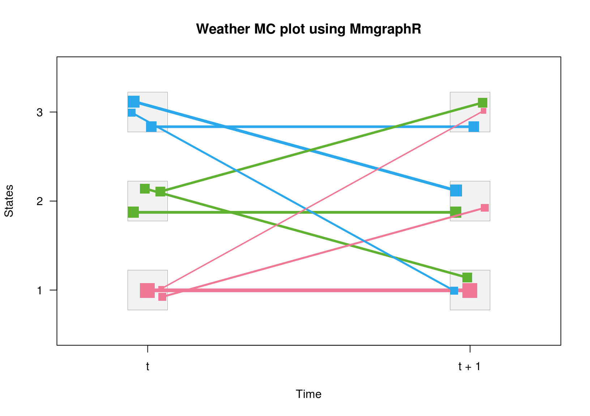

vignettes/an_introduction_to_markovchain_package.Rmd
an_introduction_to_markovchain_package.RmdMarkov chains represent a class of stochastic processes of great interest for the wide spectrum of practical applications. In particular, discrete time Markov chains (DTMC) permit to model the transition probabilities between discrete states by the aid of matrices.Various packages deal with models that are based on Markov chains:
Nevertheless, the statistical environment (R Core Team 2013) seems to lack a simple package that coherently defines S4 classes for discrete Markov chains and allows to perform probabilistic analysis, statistical inference and applications. For the sake of completeness, is the second package specifically dedicated to DTMC analysis, being (Nicholson 2013) the first one. Notwithstanding, package (Spedicato 2017) aims to offer more flexibility in handling DTMC than other existing solutions, providing S4 classes for both homogeneous and non-homogeneous Markov chains as well as methods suited to perform statistical and probabilistic analysis.
The package depends on the following packages: (Goulet et al. 2013) to perform efficient matrices powers; (Csardi and Nepusz 2006) to perform pretty plotting of markovchain objects and (Roebuck 2011), that contains functions for matrix management and calculations that emulate those within environment. Moreover, other scientific softwares provide functions specifically designed to analyze DTMC, as 9 (Wolfram Research 2013).
The paper is structured as follows: Section @ref(sec:mathematics) briefly reviews mathematics and definitions regarding DTMC, Section @ref(sec:structure) discusses how to handle and manage Markov chain objects within the package, Section @ref(sec:probability) and Section @ref(sec:statistics) show how to perform probabilistic and statistical modelling, while Section @ref(sec:applications) presents some applied examples from various fields analyzed by means of the package.
A DTMC is a sequence of random variables \(X_{1},\: X_{2}\: ,\ldots,\:X_{n},\ldots\) characterized by the Markov property (also known as memoryless property, see Equation ). The Markov property states that the distribution of the forthcoming state \(X_{n+1}\) depends only on the current state \(X_{n}\) and doesn’t depend on the previous ones \(X_{n-1},\: X_{n-2},\ldots,\: X_{1}\).
The set of possible states \(S=\left\{ s_{1},s_{2},...,s_{r}\right\}\) of \(X_{n}\) can be finite or countable and it is named the state space of the chain.
The chain moves from one state to another (this change is named either ‘transition’ or ‘step’) and the probability \(p_{ij}\) to move from state \(s_{i}\) to state \(s_{j}\) in one step is named transition probability:
The probability of moving from state \(i\) to \(j\) in \(n\) steps is denoted by \(p_{ij}^{(n)}=Pr\left(X_{n}=s_{j}\left|X_{0}=s_{i}\right.\right)\).
A DTMC is called time-homogeneous if the property shown in Equation holds. Time homogeneity implies no change in the underlying transition probabilities as time goes on. \[\begin{equation} Pr\left(X_{n+1}=s_{j}\left|X_{n}=s_{i}\right.\right)=Pr\left(X_{n}=s_{j}\left|X_{n-1}=s_{i}\right.\right). \label{eq:mcHom} \end{equation}\]
If the Markov chain is time-homogeneous, then \(p_{ij}=Pr\left(X_{k+1}=s_{j}\left|X_{k}=s_{i}\right.\right)\) and \(p_{ij}^{(n)}=Pr\left(X_{n+k}=s_{j}\left|X_{k}=s_{i}\right.\right)\), where \(k>0\).
The probability distribution of transitions from one state to another can be represented into a transition matrix \(P=(p_{ij})_{i,j}\), where each element of position \((i,j)\) represents the transition probability \(p_{ij}\). E.g., if \(r=3\) the transition matrix \(P\) is shown in Equation
The distribution over the states can be written in the form of a stochastic row vector \(x\) (the term stochastic means that \(\sum_{i}x_{i}=1, x_{i} \geq 0\)): e.g., if the current state of \(x\) is \(s_{2}\), \(x=\left(0\:1\:0\right)\). As a consequence, the relation between \(x^{(1)}\) and \(x^{(0)}\) is \(x^{(1)}=x^{(0)}P\) and, recursively, we get \(x^{(2)}=x^{(0)}P^{2}\) and \(x^{(n)}=x^{(0)}P^{n},\, n>0\).
DTMC are explained in most theory books on stochastic processes, see and for example. Valuable references online available are: , and .
A state \(s_{j}\) is said accessible from state \(s_{i}\) (written \(s_{i}\rightarrow s_{j}\)) if a system starting in state \(s_{i}\) has a positive probability to reach the state \(s_{j}\) at a certain point, i.e., \(\exists n>0:\: p_{ij}^{n}>0\). If both \(s_{i}\rightarrow s_{j}\) and \(s_{j}\rightarrow s_{i}\), then \(s_{i}\) and \(s_{j}\) are said to communicate.
A communicating class is defined to be a set of states that communicate. A DTMC can be composed by one or more communicating classes. If the DTMC is composed by only one communicating class (i.e., if all states in the chain communicate), then it is said irreducible. A communicating class is said to be closed if no states outside of the class can be reached from any state inside it.
If \(p_{ii}=1\), \(s_{i}\) is defined as absorbing state: an absorbing state corresponds to a closed communicating class composed by one state only.
The canonic form of a DTMC transition matrix is a matrix having a block form, where the closed communicating classes are shown at the beginning of the diagonal matrix.
A state \(s_{i}\) has period \(k_{i}\) if any return to state \(s_{i}\) must occur in multiplies of \(k_{i}\) steps, that is \(k_{i}=gcd\left\{ n:Pr\left(X_{n}=s_{i}\left|X_{0}=s_{i}\right.\right)>0\right\}\), where \(gcd\) is the greatest common divisor. If \(k_{i}=1\) the state \(s_{i}\) is said to be aperiodic, else if \(k_{i}>1\) the state \(s_{i}\) is periodic with period \(k_{i}\). Loosely speaking, \(s_{i}\) is periodic if it can only return to itself after a fixed number of transitions \(k_{i}>1\) (or multiple of \(k_{i}\)), else it is aperiodic.
If states \(s_{i}\) and \(s_{j}\) belong to the same communicating class, then they have the same period \(k_{i}\). As a consequence, each of the states of an irreducible DTMC share the same periodicity. This periodicity is also considered the DTMC periodicity. It is possible to classify states according to their periodicity. Let \(T^{x\rightarrow x}\) is the number of periods to go back to state \(x\) knowing that the chain starts in \(x\).
It is possible to analyze the timing to reach a certain state. The first passage time (or hitting time) from state \(s_{i}\) to state \(s_{j}\) is the number \(T_{ij}\) of steps taken by the chain until it arrives for the first time to state \(s_{j}\), given that \(X_{0} = s_{i}\). The probability distribution of \(T_{ij}\) is defined by Equation
and can be found recursively using Equation , given that \({h_{ij}}^{\left( n \right)} = p_{ij}\).
A commonly used quantity related to \(h\) is its average value, i.e. the (also expected hitting time), namely \(\bar h_{ij}= \sum_{n=1\dots\infty} n \,h_{ij}^{(n)}\).
If in the definition of the first passage time we let \(s_{i}=s_{j}\), we obtain the first return time \(T_{i}=\inf \{ n\geq1:X_{n}=s_{i}|X_{0}=s_{i} \}\). A state \(s_{i}\) is said to be recurrent if it is visited infinitely often, i.e., \(Pr(T_{i}<+\infty|X_{0}=s_{i})=1\). On the opposite, \(s_{i}\) is called transient if there is a positive probability that the chain will never return to \(s_{i}\), i.e., \(Pr(T_{i}=+\infty|X_{0}=s_{i})>0\).
Given a time homogeneous Markov chain with transition matrix , a stationary distribution is a stochastic row vector such that \(z=z\cdot P\), where \(0\leq z_{j}\leq 1 \: \forall j\) and \(\sum_{j}z_{j}=1\).
If a DTMC \(\{X_{n}\}\) is irreducible and aperiodic, then it has a limit distribution and this distribution is stationary. As a consequence, if \(P\) is the \(k\times k\) transition matrix of the chain and \(z=\left(z_{1},...,z_{k}\right)\) is the eigenvector of \(P\) such that \(\sum_{i=1}^{k}z_{i}=1\), then we get
where \(Z\) is the matrix having all rows equal to \(z\). The stationary distribution of \(\{X_{n}\}\) is represented by \(z\).
Given two absorbing states \(s_A\) (source) and \(s_B\) (sink), the \(q_j^{(AB)}\) is the probability that a process starting in state \(s_i\) is absorbed in state \(s_B\) (rather than \(s_A\)) (Noé et al. 2009). It can be computed via
Note we can also define the hitting probability from \(i\) to \(j\) as the probability of ever reaching the state \(j\) if our initial state is \(i\):
Consider the following numerical example. Suppose we have a DTMC with a set of 3 possible states \(S=\{s_{1}, s_{2}, s_{3}\}\). Let the transition matrix be: \[\begin{equation} P=\left[\begin{array}{ccc} 0.5 & 0.2 & 0.3\\ 0.15 & 0.45 & 0.4\\ 0.25 & 0.35 & 0.4 \end{array}\right]. \label{eq:trPropExEx1} \end{equation}\]
In \(P\), \(p_{11}=0.5\) is the probability that \(X_{1}=s_{1}\) given that we observed \(X_{0}=s_{1}\) is 0.5, and so on.It is easy to see that the chain is irreducible since all the states communicate (it is made by one communicating class only).
Suppose that the current state of the chain is \(X_{0}=s_{2}\), i.e., \(x^{(0)}=(0\:1\:0)\), then the probability distribution of states after 1 and 2 steps can be computed as shown in Equations @ref(eq:trPropExEx2) and @ref(eq:trPropExEx3).
If we were interested in the probability of being in the state \(s_{3}\) in the second step, then \(Pr\left(X_{2}=s_{3}\left|X_{0}=s_{2}\right.\right)=0.385\).
The package is loaded within the command line as follows:
The markovchain and markovchainList S4 classes (Chambers 2008) are defined within the package as displayed:
## Class "markovchain" [package "markovchain"]
##
## Slots:
##
## Name: states byrow transitionMatrix name
## Class: character logical matrix character## Class "markovchainList" [package "markovchain"]
##
## Slots:
##
## Name: markovchains name
## Class: list characterThe first class has been designed to handle homogeneous Markov chain processes, while the latter (which is itself a list of markovchain objects) has been designed to handle non-homogeneous Markov chains processes.
Any element of markovchain class is comprised by following slots:
states: a character vector, listing the states for which transition probabilities are defined.byrow: a logical element, indicating whether transition probabilities are shown by row or by column.transitionMatrix: the probabilities of the transition matrix.name: optional character element to name the DTMC.The markovchainList objects are defined by following slots:
markovchains: a list of markovchain objects.name: optional character element to name the DTMC.The markovchain objects can be created either in a long way, as the following code shows
weatherStates <- c("sunny", "cloudy", "rain")
byRow <- TRUE
weatherMatrix <- matrix(data = c(0.70, 0.2, 0.1,
0.3, 0.4, 0.3,
0.2, 0.45, 0.35), byrow = byRow, nrow = 3,
dimnames = list(weatherStates, weatherStates))
mcWeather <- new("markovchain", states = weatherStates, byrow = byRow,
transitionMatrix = weatherMatrix, name = "Weather")or in a shorter way, displayed below
mcWeather <- new("markovchain", states = c("sunny", "cloudy", "rain"),
transitionMatrix = matrix(data = c(0.70, 0.2, 0.1,
0.3, 0.4, 0.3,
0.2, 0.45, 0.35), byrow = byRow, nrow = 3),
name = "Weather")When new("markovchain") is called alone, a default Markov chain is created.
The quicker way to create markovchain objects is made possible thanks to the implemented initialize S4 method that checks that:
transitionMatrix to be a transition matrix, i.e., all entries to be probabilities and either all rows or all columns to sum up to one.transitionMatrix to be defined and to coincide with states vector slot.The markovchain objects can be collected in a list within markovchainList S4 objects as following example shows.
Table @ref(tab:methodsToHandleMc) lists which methods handle and manipulate markovchain objects.
The examples that follow shows how operations on markovchain objects can be easily performed. For example, using the previously defined matrix we can find what is the probability distribution of expected weather states in two and seven days, given the actual state to be cloudy.
initialState <- c(0, 1, 0)
after2Days <- initialState * (mcWeather * mcWeather)
after7Days <- initialState * (mcWeather ^ 7)
after2Days## sunny cloudy rain
## [1,] 0.39 0.355 0.255## sunny cloudy rain
## [1,] 0.462 0.319 0.219A similar answer could have been obtained defining the vector of probabilities as a column vector. A column - defined probability matrix could be set up either creating a new matrix or transposing an existing markovchain object thanks to the t method.
initialState <- c(0, 1, 0)
after2Days <- (t(mcWeather) * t(mcWeather)) * initialState
after7Days <- (t(mcWeather) ^ 7) * initialState
after2Days## [,1]
## sunny 0.390
## cloudy 0.355
## rain 0.255## [,1]
## sunny 0.462
## cloudy 0.319
## rain 0.219The initial state vector previously shown can not necessarily be a probability vector, as the code that follows shows:
fvals<-function(mchain,initialstate,n) {
out<-data.frame()
names(initialstate)<-names(mchain)
for (i in 0:n)
{
iteration<-initialstate*mchain^(i)
out<-rbind(out,iteration)
}
out<-cbind(out, i=seq(0,n))
out<-out[,c(4,1:3)]
return(out)
}
fvals(mchain=mcWeather,initialstate=c(90,5,5),n=4)## i sunny cloudy rain
## 1 0 90.00000 5.00000 5.00000
## 2 1 65.50000 22.25000 12.25000
## 3 2 54.97500 27.51250 17.51250
## 4 3 50.23875 29.88063 19.88062
## 5 4 48.10744 30.94628 20.94628Basic methods have been defined for markovchain objects to quickly get states and transition matrix dimension.
## [1] "sunny" "cloudy" "rain"## [1] "sunny" "cloudy" "rain"## [1] 3Methods are available to set and get the name of markovchain object.
## [1] "Weather"## [1] "New Name"Also it is possible to alphabetically sort the transition matrix:
## New Name
## A 3 - dimensional discrete Markov Chain defined by the following states:
## cloudy, rain, sunny
## The transition matrix (by rows) is defined as follows:
## cloudy rain sunny
## cloudy 0.40 0.30 0.3
## rain 0.45 0.35 0.2
## sunny 0.20 0.10 0.7A direct access to transition probabilities is provided both by transitionProbability method and "[" method.
## [1] 0.3## [1] 0.3The transition matrix of a markovchain object can be displayed using print or show methods (the latter being less verbose). Similarly, the underlying transition probability diagram can be plotted by the use of plot method (as shown in Figure @ref(fig:mcPlot)) which is based on package (Csardi and Nepusz 2006). plot method for markovchain objects is a wrapper of plot.igraph for igraph S4 objects defined within the package. Additional parameters can be passed to plot function to control the network graph layout. There are also and ways available for plotting as shown in Figure @ref(fig:mcPlotdiagram). The plot function also uses communicatingClasses function to separate out states of different communicating classes. All states that belong to one class have same colour.
## sunny cloudy rain
## sunny 0.7 0.20 0.10
## cloudy 0.3 0.40 0.30
## rain 0.2 0.45 0.35## New Name
## A 3 - dimensional discrete Markov Chain defined by the following states:
## sunny, cloudy, rain
## The transition matrix (by rows) is defined as follows:
## sunny cloudy rain
## sunny 0.7 0.20 0.10
## cloudy 0.3 0.40 0.30
## rain 0.2 0.45 0.35##
## Attaching package: 'igraph'## The following objects are masked from 'package:stats':
##
## decompose, spectrum## The following object is masked from 'package:base':
##
## unionWeather example. Markov chain plot
Weather example. Markov chain plot with diagram
If one would like to use the package (Adamopoulou 2018) to plot the transition matric, the following code shows how to do:
## Loading required package: TraMineR##
## TraMineR stable version 2.0-12 (Built: 2019-07-20)## Website: http://traminer.unige.ch## Please type 'citation("TraMineR")' for citation information.## Loading required package: colorspacestochastic_matrix_to_plot <- as(mcWeather,"matrix")
trmatplot(stochastic_matrix_to_plot,main="Weather MC plot using MmgraphR")
Import and export from some specific classes is possible, as shown in Figure @ref(fig:fromAndTo) and in the following code.
## t0 t1 prob
## 1 sunny sunny 0.70
## 2 sunny cloudy 0.20
## 3 sunny rain 0.10
## 4 cloudy sunny 0.30
## 5 cloudy cloudy 0.40
## 6 cloudy rain 0.30
## 7 rain sunny 0.20
## 8 rain cloudy 0.45
## 9 rain rain 0.35## Loading required package: msmQ <- rbind ( c(0, 0.25, 0, 0.25),
c(0.166, 0, 0.166, 0.166),
c(0, 0.25, 0, 0.25),
c(0, 0, 0, 0) )
cavmsm <- msm(state ~ years, subject = PTNUM, data = cav, qmatrix = Q, death = 4)
msmMc <- as(cavmsm, "markovchain")
msmMc## Unnamed Markov chain
## A 4 - dimensional discrete Markov Chain defined by the following states:
## State 1, State 2, State 3, State 4
## The transition matrix (by rows) is defined as follows:
## State 1 State 2 State 3 State 4
## State 1 0.853958721 0.08836953 0.01475543 0.04291632
## State 2 0.155576908 0.56663284 0.20599563 0.07179462
## State 3 0.009903994 0.07853691 0.65965727 0.25190183
## State 4 0.000000000 0.00000000 0.00000000 1.00000000library(etm)
data(sir.cont)
sir.cont <- sir.cont[order(sir.cont$id, sir.cont$time), ]
for (i in 2:nrow(sir.cont)) {
if (sir.cont$id[i]==sir.cont$id[i-1]) {
if (sir.cont$time[i]==sir.cont$time[i-1]) {
sir.cont$time[i-1] <- sir.cont$time[i-1] - 0.5
}
}
}
tra <- matrix(ncol=3,nrow=3,FALSE)
tra[1, 2:3] <- TRUE
tra[2, c(1, 3)] <- TRUE
tr.prob <- etm(sir.cont, c("0", "1", "2"), tra, "cens", 1)
tr.prob## Multistate model with 2 transient state(s)
## and 1 absorbing state(s)
##
## Possible transitions:
## from to
## 0 1
## 0 2
## 1 0
## 1 2
##
## Estimate of P(1, 183)
## 0 1 2
## 0 0 0 1
## 1 0 0 1
## 2 0 0 1## Unnamed Markov chain
## A 3 - dimensional discrete Markov Chain defined by the following states:
## 0, 1, 2
## The transition matrix (by rows) is defined as follows:
## 0 1 2
## 0 0.0000000 0.5000000 0.5000000
## 1 0.5000000 0.0000000 0.5000000
## 2 0.3333333 0.3333333 0.3333333The markovchain methods for import and export
Coerce from matrix method, as the code below shows, represents another approach to create a markovchain method starting from a given squared probability matrix.
myMatr<-matrix(c(.1,.8,.1,.2,.6,.2,.3,.4,.3), byrow=TRUE, ncol=3)
myMc<-as(myMatr, "markovchain")
myMc## Unnamed Markov chain
## A 3 - dimensional discrete Markov Chain defined by the following states:
## s1, s2, s3
## The transition matrix (by rows) is defined as follows:
## s1 s2 s3
## s1 0.1 0.8 0.1
## s2 0.2 0.6 0.2
## s3 0.3 0.4 0.3Non-homogeneous Markov chains can be created with the aid of markovchainList object. The example that follows arises from health insurance, where the costs associated to patients in a Continuous Care Health Community (CCHC) are modelled by a non-homogeneous Markov Chain, since the transition probabilities change by year. Methods explicitly written for markovchainList objects are: print, show, dim and [.
stateNames = c("H", "I", "D")
Q0 <- new("markovchain", states = stateNames,
transitionMatrix =matrix(c(0.7, 0.2, 0.1,0.1, 0.6, 0.3,0, 0, 1),
byrow = TRUE, nrow = 3), name = "state t0")
Q1 <- new("markovchain", states = stateNames,
transitionMatrix = matrix(c(0.5, 0.3, 0.2,0, 0.4, 0.6,0, 0, 1),
byrow = TRUE, nrow = 3), name = "state t1")
Q2 <- new("markovchain", states = stateNames,
transitionMatrix = matrix(c(0.3, 0.2, 0.5,0, 0.2, 0.8,0, 0, 1),
byrow = TRUE,nrow = 3), name = "state t2")
Q3 <- new("markovchain", states = stateNames,
transitionMatrix = matrix(c(0, 0, 1, 0, 0, 1, 0, 0, 1),
byrow = TRUE, nrow = 3), name = "state t3")
mcCCRC <- new("markovchainList",markovchains = list(Q0,Q1,Q2,Q3),
name = "Continuous Care Health Community")
print(mcCCRC)## Continuous Care Health Community list of Markov chain(s)
## Markovchain 1
## state t0
## A 3 - dimensional discrete Markov Chain defined by the following states:
## H, I, D
## The transition matrix (by rows) is defined as follows:
## H I D
## H 0.7 0.2 0.1
## I 0.1 0.6 0.3
## D 0.0 0.0 1.0
##
## Markovchain 2
## state t1
## A 3 - dimensional discrete Markov Chain defined by the following states:
## H, I, D
## The transition matrix (by rows) is defined as follows:
## H I D
## H 0.5 0.3 0.2
## I 0.0 0.4 0.6
## D 0.0 0.0 1.0
##
## Markovchain 3
## state t2
## A 3 - dimensional discrete Markov Chain defined by the following states:
## H, I, D
## The transition matrix (by rows) is defined as follows:
## H I D
## H 0.3 0.2 0.5
## I 0.0 0.2 0.8
## D 0.0 0.0 1.0
##
## Markovchain 4
## state t3
## A 3 - dimensional discrete Markov Chain defined by the following states:
## H, I, D
## The transition matrix (by rows) is defined as follows:
## H I D
## H 0 0 1
## I 0 0 1
## D 0 0 1It is possible to perform direct access to markovchainList elements, as well as to determine the number of markovchain objects by which a markovchainList object is composed.
## state t0
## A 3 - dimensional discrete Markov Chain defined by the following states:
## H, I, D
## The transition matrix (by rows) is defined as follows:
## H I D
## H 0.7 0.2 0.1
## I 0.1 0.6 0.3
## D 0.0 0.0 1.0## [1] 4The markovchain package contains some data found in the literature related to DTMC models (see Section @ref(sec:applications). Table @ref(tab:datasets) lists datasets and tables included within the current release of the package.
Finally, Table @ref(tab:demos) lists the demos included in the demo directory of the package.
The package contains functions to analyse DTMC from a probabilistic perspective. For example, the package provides methods to find stationary distributions and identifying absorbing and transient states. Many of these methods come from listings that have been ported into . For a full description of the underlying theory and algorithm the interested reader can overview the original listings, and .
Table @ref(tab:methodsToStats) shows methods that can be applied on markovchain objects to perform probabilistic analysis.
The conditional distribution of weather states, given that current day’s weather is sunny, is given by following code.
## sunny cloudy rain
## 0.7 0.2 0.1A stationary (steady state, or equilibrium) vector is a probability vector such that Equation holds
Steady states are associated to \(P\) eigenvalues equal to one. Therefore the steady states vector can be identified by the following:
Numeric issue (negative values) can arise when the Markov Chain contains more closed classes. If negative values are found in the initial solution, the above described algorithm is performed on the submatrix corresponding to recurrent P classes. Another vignette in the package focuses on this issue.
The result is returned in matrix form.
## sunny cloudy rain
## [1,] 0.4636364 0.3181818 0.2181818It is possible for a Markov chain to have more than one stationary distribution, as the gambler ruin example shows.
gamblerRuinMarkovChain <- function(moneyMax, prob = 0.5) {
require(matlab)
matr <- zeros(moneyMax + 1)
states <- as.character(seq(from = 0, to = moneyMax, by = 1))
rownames(matr) = states; colnames(matr) = states
matr[1,1] = 1; matr[moneyMax + 1,moneyMax + 1] = 1
for(i in 2:moneyMax)
{ matr[i,i-1] = 1 - prob; matr[i, i + 1] = prob }
out <- new("markovchain",
transitionMatrix = matr,
name = paste("Gambler ruin", moneyMax, "dim", sep = " ")
)
return(out)
}
mcGR4 <- gamblerRuinMarkovChain(moneyMax = 4, prob = 0.5)## Loading required package: matlab##
## Attaching package: 'matlab'## The following object is masked from 'package:stats':
##
## reshape## The following objects are masked from 'package:utils':
##
## find, fix## The following object is masked from 'package:base':
##
## sum## 0 1 2 3 4
## [1,] 0 0 0 0 1
## [2,] 1 0 0 0 0Absorbing states are determined by means of absorbingStates method.
## [1] "0" "4"## character(0)The key function used within (and ’s derived functions) is .commclassKernel, that is called below.
.commClassesKernel <- function(P){
m <- ncol(P)
stateNames <- rownames(P)
T <- zeros(m)
i <- 1
while (i <= m) {
a <- i
b <- zeros(1,m)
b[1,i] <- 1
old <- 1
new <- 0
while (old != new) {
old <- sum(find(b > 0))
n <- size(a)[2]
matr <- matrix(as.numeric(P[a,]), ncol = m,
nrow = n)
c <- colSums(matr)
d <- find(c)
n <- size(d)[2]
b[1,d] <- ones(1,n)
new <- sum(find(b>0))
a <- d
}
T[i,] <- b
i <- i+1 }
F <- t(T)
C <- (T > 0)&(F > 0)
v <- (apply(t(C) == t(T), 2, sum) == m)
colnames(C) <- stateNames
rownames(C) <- stateNames
names(v) <- stateNames
out <- list(C = C, v = v)
return(out)
}The .commclassKernel function gets a transition matrix of dimension \(n\) and return a list of two items:
C, an adjacency matrix showing for each state \(s_{j}\) (in the row) which states lie in the same communicating class of \(s_{j}\) (flagged with 1).v, a binary vector indicating whether the state \(s_{j}\) is transient (0) or not (1).These functions are used by two other internal functions on which the summary method for markovchain objects works.
The example matrix used in well exemplifies the purpose of the function.
P <- matlab::zeros(10)
P[1, c(1, 3)] <- 1/2;
P[2, 2] <- 1/3; P[2,7] <- 2/3;
P[3, 1] <- 1;
P[4, 5] <- 1;
P[5, c(4, 5, 9)] <- 1/3;
P[6, 6] <- 1;
P[7, 7] <- 1/4; P[7,9] <- 3/4;
P[8, c(3, 4, 8, 10)] <- 1/4;
P[9, 2] <- 1;
P[10, c(2, 5, 10)] <- 1/3;
rownames(P) <- letters[1:10]
colnames(P) <- letters[1:10]
probMc <- new("markovchain", transitionMatrix = P,
name = "Probability MC")
.commClassesKernel(P)## $C
## a b c d e f g h i j
## a TRUE FALSE TRUE FALSE FALSE FALSE FALSE FALSE FALSE FALSE
## b FALSE TRUE FALSE FALSE FALSE FALSE TRUE FALSE TRUE FALSE
## c TRUE FALSE TRUE FALSE FALSE FALSE FALSE FALSE FALSE FALSE
## d FALSE FALSE FALSE TRUE TRUE FALSE FALSE FALSE FALSE FALSE
## e FALSE FALSE FALSE TRUE TRUE FALSE FALSE FALSE FALSE FALSE
## f FALSE FALSE FALSE FALSE FALSE TRUE FALSE FALSE FALSE FALSE
## g FALSE TRUE FALSE FALSE FALSE FALSE TRUE FALSE TRUE FALSE
## h FALSE FALSE FALSE FALSE FALSE FALSE FALSE TRUE FALSE FALSE
## i FALSE TRUE FALSE FALSE FALSE FALSE TRUE FALSE TRUE FALSE
## j FALSE FALSE FALSE FALSE FALSE FALSE FALSE FALSE FALSE TRUE
##
## $v
## a b c d e f g h i j
## TRUE TRUE TRUE FALSE FALSE TRUE TRUE FALSE TRUE FALSE## Probability MC Markov chain that is composed by:
## Closed classes:
## a c
## b g i
## f
## Recurrent classes:
## {a,c},{b,g,i},{f}
## Transient classes:
## {d,e},{h},{j}
## The Markov chain is not irreducible
## The absorbing states are: fAll states that pertain to a transient class are named “transient” and a specific method has been written to elicit them.
## [1] "d" "e" "h" "j"Listings from have been adapted into canonicForm method that turns a Markov chain into canonic form.
## Probability MC
## A 10 - dimensional discrete Markov Chain defined by the following states:
## a, b, c, d, e, f, g, h, i, j
## The transition matrix (by rows) is defined as follows:
## a b c d e f g h i
## a 0.5 0.0000000 0.50 0.0000000 0.0000000 0 0.0000000 0.00 0.0000000
## b 0.0 0.3333333 0.00 0.0000000 0.0000000 0 0.6666667 0.00 0.0000000
## c 1.0 0.0000000 0.00 0.0000000 0.0000000 0 0.0000000 0.00 0.0000000
## d 0.0 0.0000000 0.00 0.0000000 1.0000000 0 0.0000000 0.00 0.0000000
## e 0.0 0.0000000 0.00 0.3333333 0.3333333 0 0.0000000 0.00 0.3333333
## f 0.0 0.0000000 0.00 0.0000000 0.0000000 1 0.0000000 0.00 0.0000000
## g 0.0 0.0000000 0.00 0.0000000 0.0000000 0 0.2500000 0.00 0.7500000
## h 0.0 0.0000000 0.25 0.2500000 0.0000000 0 0.0000000 0.25 0.0000000
## i 0.0 1.0000000 0.00 0.0000000 0.0000000 0 0.0000000 0.00 0.0000000
## j 0.0 0.3333333 0.00 0.0000000 0.3333333 0 0.0000000 0.00 0.0000000
## j
## a 0.0000000
## b 0.0000000
## c 0.0000000
## d 0.0000000
## e 0.0000000
## f 0.0000000
## g 0.0000000
## h 0.2500000
## i 0.0000000
## j 0.3333333## Probability MC
## A 10 - dimensional discrete Markov Chain defined by the following states:
## a, c, b, g, i, f, d, e, h, j
## The transition matrix (by rows) is defined as follows:
## a c b g i f d e h
## a 0.5 0.50 0.0000000 0.0000000 0.0000000 0 0.0000000 0.0000000 0.00
## c 1.0 0.00 0.0000000 0.0000000 0.0000000 0 0.0000000 0.0000000 0.00
## b 0.0 0.00 0.3333333 0.6666667 0.0000000 0 0.0000000 0.0000000 0.00
## g 0.0 0.00 0.0000000 0.2500000 0.7500000 0 0.0000000 0.0000000 0.00
## i 0.0 0.00 1.0000000 0.0000000 0.0000000 0 0.0000000 0.0000000 0.00
## f 0.0 0.00 0.0000000 0.0000000 0.0000000 1 0.0000000 0.0000000 0.00
## d 0.0 0.00 0.0000000 0.0000000 0.0000000 0 0.0000000 1.0000000 0.00
## e 0.0 0.00 0.0000000 0.0000000 0.3333333 0 0.3333333 0.3333333 0.00
## h 0.0 0.25 0.0000000 0.0000000 0.0000000 0 0.2500000 0.0000000 0.25
## j 0.0 0.00 0.3333333 0.0000000 0.0000000 0 0.0000000 0.3333333 0.00
## j
## a 0.0000000
## c 0.0000000
## b 0.0000000
## g 0.0000000
## i 0.0000000
## f 0.0000000
## d 0.0000000
## e 0.0000000
## h 0.2500000
## j 0.3333333The function is.accessible permits to investigate whether a state \(s_{j}\) is accessible from state \(s_i\), that is whether the probability to eventually reach \(s_j\) starting from \(s_{i}\) is greater than zero.
## [1] TRUE## [1] FALSEIn Section @ref(sec:properties) we observed that, if a DTMC is irreducible, all its states share the same periodicity. Then, the period function returns the periodicity of the DTMC, provided that it is irreducible. The example that follows shows how to find if a DTMC is reducible or irreducible by means of the function is.irreducible and, in the latter case, the method period is used to compute the periodicity of the chain.
E <- matrix(0, nrow = 4, ncol = 4)
E[1, 2] <- 1
E[2, 1] <- 1/3; E[2, 3] <- 2/3
E[3,2] <- 1/4; E[3, 4] <- 3/4
E[4, 3] <- 1
mcE <- new("markovchain", states = c("a", "b", "c", "d"),
transitionMatrix = E,
name = "E")
is.irreducible(mcE)## [1] TRUE## [1] 2The example Markov chain found in web site has been used, and is plotted in Figure @ref(fig:mcMathematics).
require(matlab)
mathematicaMatr <- zeros(5)
mathematicaMatr[1,] <- c(0, 1/3, 0, 2/3, 0)
mathematicaMatr[2,] <- c(1/2, 0, 0, 0, 1/2)
mathematicaMatr[3,] <- c(0, 0, 1/2, 1/2, 0)
mathematicaMatr[4,] <- c(0, 0, 1/2, 1/2, 0)
mathematicaMatr[5,] <- c(0, 0, 0, 0, 1)
statesNames <- letters[1:5]
mathematicaMc <- new("markovchain", transitionMatrix = mathematicaMatr,
name = "Mathematica MC", states = statesNames)Mathematica 9 example. Markov chain plot.
## Mathematica MC Markov chain that is composed by:
## Closed classes:
## c d
## e
## Recurrent classes:
## {c,d},{e}
## Transient classes:
## {a,b}
## The Markov chain is not irreducible
## The absorbing states are: e provides code to compute first passage time (within \(1,2,\ldots, n\) steps) given the initial state to be \(i\). The listings translated into on which the firstPassage function is based are:
.firstpassageKernel <- function(P, i, n){
G <- P
H <- P[i,]
E <- 1 - diag(size(P)[2])
for (m in 2:n) {
G <- P %*% (G * E)
H <- rbind(H, G[i,])
}
return(H)
}We conclude that the probability for the first rainy day to be the third one, given that the current state is sunny, is given by:
## [1] 0.121To compute the mean first passage times, i.e. the expected number of days before it rains given that today is sunny, we can use the meanFirstPassageTime function:
## sunny cloudy rain
## sunny 0.000000 4.285714 6.666667
## cloudy 3.725490 0.000000 5.000000
## rain 4.117647 2.857143 0.000000indicating e.g. that the average numer of days of sun or cloud before rain is 6.67 if we start counting from a sunny day, and 5 if we start from a cloudy day. Note that we can also specify one or more destination states:
## sunny cloudy
## 6.666667 5.000000The implementation follows the matrix solutions by (Grinstead and Snell 2006). We can check the result by averaging the first passage probability density function:
firstPassagePdF.long <- firstPassage(object = mcWeather, state = "sunny", n = 100)
sum(firstPassagePdF.long[,"rain"] * 1:100)## [1] 6.666664The committor probability tells us the probability to reach a given state before another given. Suppose that we start in a cloudy day, the probabilities of experiencing a rainy day before a sunny one is 0.5:
## sunny cloudy rain
## 0.0 0.5 1.0Rewriting the system as:
we end up having to solve the block systems:
Let us imagine the \(i\) -th state has transition probabilities: \((0, \ldots, 0, \underset{i)}{1}, 0, \ldots, 0)\). Then that same row would turn into \((0,0, \ldots, 0)\) for some block, thus obtaining a singular matrix. Another case which may give us problems could be: state \(i\) has the following transition probabilities: \((0, \ldots, 0, \underset{j)}{1}, 0, \ldots, 0)\) and the state \(j\) has the following transition probabilities: \((0, \ldots, 0, \underset{i)}{1}, 0, \ldots, 0)\). Then when builing some blocks we will end up with rows:
which are linearly dependent. Our hypothesis is that if we treat the closed communicating classes differently, we might delete the linearity in the system. If we have a closed communicating class \(C_u\), then \(h_{i,j} = 1\) for all \(i,j \in C_u\) and \(h_{k,j} = 0\) for all \(k\not\in C_u\). Then we can set \(X_u\) appropriately and solve the other \(X_v\) using those values.
The method in charge of that in markovchain package is hittingProbabilities, which receives a Markov chain and computes the matrix \((h_{ij})_{i,j = 1,\ldots, n}\) where \(S = \{s_1, \ldots, s_n\}\) is the set of all states of the chain.
For the following chain:
M <- matlab::zeros(5, 5)
M[1,1] <- M[5,5] <- 1
M[2,1] <- M[2,3] <- 1/2
M[3,2] <- M[3,4] <- 1/2
M[4,2] <- M[4,5] <- 1/2
hittingTest <- new("markovchain", transitionMatrix = M)
hittingProbabilities(hittingTest)## [,1] [,2] [,3] [,4] [,5]
## [1,] 1.0 0.000 0.000 0.0000000 0.0
## [2,] 0.8 0.375 0.500 0.3333333 0.2
## [3,] 0.6 0.750 0.375 0.6666667 0.4
## [4,] 0.4 0.500 0.250 0.1666667 0.6
## [5,] 0.0 0.000 0.000 0.0000000 1.0we want to compute the hitting probabilities. That can be done with:
## [,1] [,2] [,3] [,4] [,5]
## [1,] 1.0 0.000 0.000 0.0000000 0.0
## [2,] 0.8 0.375 0.500 0.3333333 0.2
## [3,] 0.6 0.750 0.375 0.6666667 0.4
## [4,] 0.4 0.500 0.250 0.1666667 0.6
## [5,] 0.0 0.000 0.000 0.0000000 1.0In the case of the mcWeather Markov chain we would obtain a matrix with all its elements set to \(1\). That makes sense (and is desirable) since if today is sunny, we expect it would be sunny again at certain point in the time, and the same with rainy weather (that way we assure good harvests):
## [,1] [,2] [,3]
## [1,] 1 1 1
## [2,] 1 1 1
## [3,] 1 1 1Table @ref(tab:funs4Stats) lists the functions and methods implemented within the package which help to fit, simulate and predict DTMC.
Simulating a random sequence from an underlying DTMC is quite easy thanks to the function rmarkovchain. The following code generates a year of weather states according to mcWeather underlying stochastic process.
## [1] "sunny" "sunny" "cloudy" "rain" "cloudy" "cloudy" "sunny"
## [8] "cloudy" "rain" "sunny" "cloudy" "sunny" "rain" "sunny"
## [15] "cloudy" "rain" "rain" "cloudy" "sunny" "sunny" "sunny"
## [22] "sunny" "sunny" "sunny" "cloudy" "cloudy" "sunny" "sunny"
## [29] "sunny" "sunny"Similarly, it is possible to simulate one or more sequences from a non-homogeneous Markov chain, as the following code (applied on CCHC example) exemplifies.
patientStates <- rmarkovchain(n = 5, object = mcCCRC, t0 = "H",
include.t0 = TRUE)
patientStates[1:10,]## iteration values
## 1 1 H
## 2 1 H
## 3 1 D
## 4 1 D
## 5 1 D
## 6 2 H
## 7 2 H
## 8 2 I
## 9 2 D
## 10 2 DTwo advance parameters are availabe to the rmarkovchain method which helps you decide which implementation to use. There are four options available : , in parallel, and in parallel. Two boolean parameters useRcpp and parallel will decide which implementation will be used. Default is and i.e. implementation. The implementation is generally faster than the R implementation. If you have multicore processors then you can take advantage of parallel parameter by setting it to TRUE. When both Rcpp=TRUE and parallel=TRUE the parallelization has been carried out using package .
A time homogeneous Markov chain can be fit from given data. Four methods have been implemented within current version of package: maximum likelihood, maximum likelihood with Laplace smoothing, Bootstrap approach, maximum a posteriori.
Equation shows the maximum likelihood estimator (MLE) of the \(p_{ij}\) entry, where the \(n_{ij}\) element consists in the number sequences \(\left( X_{t}=s_{i}, X_{t+1}=s_{j}\right)\) found in the sample, that is
Equation @ref(eq:SE) shows the standardError of the MLE .
weatherFittedMLE <- markovchainFit(data = weathersOfDays, method = "mle",name = "Weather MLE")
weatherFittedMLE$estimate## Weather MLE
## A 3 - dimensional discrete Markov Chain defined by the following states:
## cloudy, rain, sunny
## The transition matrix (by rows) is defined as follows:
## cloudy rain sunny
## cloudy 0.3603604 0.3423423 0.2972973
## rain 0.4375000 0.3000000 0.2625000
## sunny 0.2080925 0.1040462 0.6878613## cloudy rain sunny
## cloudy 0.05697798 0.05553526 0.05175282
## rain 0.07395100 0.06123724 0.05728220
## sunny 0.03468208 0.02452393 0.06305614The Laplace smoothing approach is a variation of the MLE, where the \(n_{ij}\) is substituted by \(n_{ij}+\alpha\) (see Equation ), being \(\alpha\) an arbitrary positive stabilizing parameter.
weatherFittedLAPLACE <- markovchainFit(data = weathersOfDays,
method = "laplace", laplacian = 0.01,
name = "Weather LAPLACE")
weatherFittedLAPLACE$estimate## Weather LAPLACE
## A 3 - dimensional discrete Markov Chain defined by the following states:
## cloudy, rain, sunny
## The transition matrix (by rows) is defined as follows:
## cloudy rain sunny
## cloudy 0.3603531 0.3423399 0.2973070
## rain 0.4374610 0.3000125 0.2625266
## sunny 0.2081142 0.1040860 0.6877998(NOTE: The Confidence Interval option is enabled by default. Remove this option to fasten computations.) Both MLE and Laplace approach are based on the createSequenceMatrix functions that returns the raw counts transition matrix.
## cloudy rain sunny
## cloudy 40 38 33
## rain 35 24 21
## sunny 36 18 119stringchar could contain NA values, and the transitions containing NA would be ignored.
An issue occurs when the sample contains only one realization of a state (say \(X_{\beta}\)) which is located at the end of the data sequence, since it yields to a row of zero (no sample to estimate the conditional distribution of the transition). In this case the estimated transition matrix is corrected assuming \(p_{\beta,j}=1/k\), being \(k\) the possible states.
Create sequence matrix can also be used to obtain raw count transition matrices from a given \(n*2\) matrix as the following example shows:
myMatr<-matrix(c("a","b","b","a","a","b","b","b","b","a","a","a","b","a"),ncol=2)
createSequenceMatrix(stringchar = myMatr,toRowProbs = TRUE)## a b
## a 0.6666667 0.3333333
## b 0.5000000 0.5000000A bootstrap estimation approach has been developed within the package in order to provide an indication of the variability of \({\hat p}_{ij}\) estimates. The bootstrap approach implemented within the package follows these steps:
nboot parameter of markovchainFit function.bootStrapSamples slot of the returned list.bootStrapSamples list, normalized by row. A standardError of \(\hat{{p^{MLE}}_{ij}}\) estimate is provided as well.weatherFittedBOOT <- markovchainFit(data = weathersOfDays,
method = "bootstrap", nboot = 20)
weatherFittedBOOT$estimate## BootStrap Estimate
## A 3 - dimensional discrete Markov Chain defined by the following states:
## cloudy, rain, sunny
## The transition matrix (by rows) is defined as follows:
## cloudy rain sunny
## cloudy 0.3515103 0.3444988 0.3039908
## rain 0.4250353 0.3153023 0.2596624
## sunny 0.2163500 0.1016537 0.6819963## cloudy rain sunny
## cloudy 0.010680720 0.009802248 0.011498131
## rain 0.012587354 0.011195949 0.014145195
## sunny 0.007391729 0.006491509 0.008451873The bootstrapping process can be done in parallel thanks to package . Parallelized implementation is definitively suggested when the data sample size or the required number of bootstrap runs is high.
weatherFittedBOOTParallel <- markovchainFit(data = weathersOfDays,
method = "bootstrap", nboot = 200,
parallel = TRUE)
weatherFittedBOOTParallel$estimate
weatherFittedBOOTParallel$standardErrorThe parallel bootstrapping uses all the available cores on a machine by default. However, it is also possible to tune the number of threads used. Note that this should be done in R before calling the markovchainFit function. For example, the following code will set the number of threads to 4.
For more details, please refer to web site.
For all the fitting methods, the logLikelihood denoted in Equation is provided.
\[\begin{equation} LLH = \sum_{i,j} n_{ij} * log (p_{ij}) \label{eq:LLH} \end{equation}\] where \(n_{ij}\) is the entry of the frequency matrix and \(p_{ij}\) is the entry of the transition probability matrix.
## [1] -349.2767## [1] -349.3807Confidence matrices of estimated parameters (parametric for MLE, non - parametric for BootStrap) are available as well. The confidenceInterval is provided with the two matrices: lowerEndpointMatrix and upperEndpointMatrix. The confidence level (CL) is 0.95 by default and can be given as an argument of the function markovchainFit. This is used to obtain the standard score (z-score). From classical inference theory, if \(ci\) is the level of confidence required assuming normal distribution the \(zscore(ci)\) solves \(\Phi \left ( 1-\left(\frac{1-ci}{2}\right) \right )\) Equations and show the confidenceInterval of a fitting. Note that each entry of the matrices is bounded between 0 and 1.
## NULL## $confidenceLevel
## [1] 0.95
##
## $lowerEndpointMatrix
## cloudy rain sunny
## cloudy 0.3339421 0.32837557 0.2850781
## rain 0.4043309 0.29688665 0.2363956
## sunny 0.2041917 0.09097612 0.6680942
##
## $upperEndpointMatrix
## cloudy rain sunny
## cloudy 0.3690785 0.3606221 0.3229036
## rain 0.4457396 0.3337180 0.2829292
## sunny 0.2285083 0.1123313 0.6958984A special function, multinomialConfidenceIntervals, has been written in order to obtain multinomial wise confidence intervals. The code has been based on and Rcpp translation of package’s functions that were themselves based on the paper.
multinomialConfidenceIntervals(transitionMatrix =
weatherFittedMLE$estimate@transitionMatrix,
countsTransitionMatrix = createSequenceMatrix(weathersOfDays))## $confidenceLevel
## [1] 0.95
##
## $lowerEndpointMatrix
## cloudy rain sunny
## cloudy 0.2612613 0.24324324 0.1981982
## rain 0.3250000 0.18750000 0.1500000
## sunny 0.1445087 0.04046243 0.6242775
##
## $upperEndpointMatrix
## cloudy rain sunny
## cloudy 0.4607567 0.4427386 0.3976936
## rain 0.5559026 0.4184026 0.3809026
## sunny 0.2798760 0.1758298 0.7596448The functions for fitting DTMC have mostly been rewritten in using since version 0.2.
It is also possible to fit a DTMC object from matrix or data.frame objects as shown in following code.
The same applies for markovchainList.
## holson list of Markov chain(s)
## Markovchain 1
## Unnamed Markov chain
## A 3 - dimensional discrete Markov Chain defined by the following states:
## 1, 2, 3
## The transition matrix (by rows) is defined as follows:
## 1 2 3
## 1 0.94609164 0.05390836 0.0000000
## 2 0.26356589 0.62790698 0.1085271
## 3 0.02325581 0.18604651 0.7906977
##
## Markovchain 2
## Unnamed Markov chain
## A 3 - dimensional discrete Markov Chain defined by the following states:
## 1, 2, 3
## The transition matrix (by rows) is defined as follows:
## 1 2 3
## 1 0.9323410 0.0676590 0.0000000
## 2 0.2551724 0.5103448 0.2344828
## 3 0.0000000 0.0862069 0.9137931
##
## Markovchain 3
## Unnamed Markov chain
## A 3 - dimensional discrete Markov Chain defined by the following states:
## 1, 2, 3
## The transition matrix (by rows) is defined as follows:
## 1 2 3
## 1 0.94765840 0.04820937 0.004132231
## 2 0.26119403 0.66417910 0.074626866
## 3 0.01428571 0.13571429 0.850000000
##
## Markovchain 4
## Unnamed Markov chain
## A 3 - dimensional discrete Markov Chain defined by the following states:
## 1, 2, 3
## The transition matrix (by rows) is defined as follows:
## 1 2 3
## 1 0.9172414 0.07724138 0.005517241
## 2 0.1678322 0.60839161 0.223776224
## 3 0.0000000 0.03030303 0.969696970Finally, given a list object, it is possible to fit a markovchain object or to obtain the raw transition matrix.
c1<-c("a","b","a","a","c","c","a")
c2<-c("b")
c3<-c("c","a","a","c")
c4<-c("b","a","b","a","a","c","b")
c5<-c("a","a","c",NA)
c6<-c("b","c","b","c","a")
mylist<-list(c1,c2,c3,c4,c5,c6)
mylistMc<-markovchainFit(data=mylist)
mylistMc## $estimate
## MLE Fit
## A 3 - dimensional discrete Markov Chain defined by the following states:
## a, b, c
## The transition matrix (by rows) is defined as follows:
## a b c
## a 0.4 0.2000000 0.4000000
## b 0.6 0.0000000 0.4000000
## c 0.5 0.3333333 0.1666667
##
##
## $standardError
## a b c
## a 0.2000000 0.1414214 0.2000000
## b 0.3464102 0.0000000 0.2828427
## c 0.2886751 0.2357023 0.1666667
##
## $confidenceLevel
## [1] 0.95
##
## $lowerEndpointMatrix
## a b c
## a 0.008007122 0 0.008007122
## b 0.000000000 0 0.000000000
## c 0.000000000 0 0.000000000
##
## $upperEndpointMatrix
## a b c
## a 0.7919929 0.4771808 0.7919929
## b 1.0000000 0.0000000 0.9543616
## c 1.0000000 0.7953014 0.4933274The same works for markovchainFitList.
## $estimate
## list of Markov chain(s)
## Markovchain 1
## Unnamed Markov chain
## A 3 - dimensional discrete Markov Chain defined by the following states:
## a, b, c
## The transition matrix (by rows) is defined as follows:
## a b c
## a 0.5 0.5 0.0
## b 0.5 0.0 0.5
## c 1.0 0.0 0.0
##
## Markovchain 2
## Unnamed Markov chain
## A 3 - dimensional discrete Markov Chain defined by the following states:
## a, b, c
## The transition matrix (by rows) is defined as follows:
## a b c
## a 0.3333333 0.3333333 0.3333333
## b 1.0000000 0.0000000 0.0000000
## c 0.0000000 1.0000000 0.0000000
##
## Markovchain 3
## Unnamed Markov chain
## A 3 - dimensional discrete Markov Chain defined by the following states:
## a, b, c
## The transition matrix (by rows) is defined as follows:
## a b c
## a 0.5000000 0.0000000 0.5000000
## b 0.5000000 0.0000000 0.5000000
## c 0.3333333 0.3333333 0.3333333
##
## Markovchain 4
## Unnamed Markov chain
## A 2 - dimensional discrete Markov Chain defined by the following states:
## a, c
## The transition matrix (by rows) is defined as follows:
## a c
## a 0.5 0.5
## c 1.0 0.0
##
## Markovchain 5
## Unnamed Markov chain
## A 2 - dimensional discrete Markov Chain defined by the following states:
## a, c
## The transition matrix (by rows) is defined as follows:
## a c
## a 0 1
## c 0 1
##
## Markovchain 6
## Unnamed Markov chain
## A 3 - dimensional discrete Markov Chain defined by the following states:
## a, b, c
## The transition matrix (by rows) is defined as follows:
## a b c
## a 0.3333333 0.3333333 0.3333333
## b 0.3333333 0.3333333 0.3333333
## c 0.5000000 0.5000000 0.0000000If any transition contains NA, it will be ignored in the results as the above example showed.
The \(n\)-step forward predictions can be obtained using the predict methods explicitly written for markovchain and markovchainList objects. The prediction is the mode of the conditional distribution of \(X_{t+1}\) given \(X_{t}=s_{j}\), being \(s_{j}\) the last realization of the DTMC (homogeneous or non-homogeneous).
The 3-days forward predictions from markovchain object can be generated as follows, assuming that the last two days were respectively “cloudy” and “sunny”.
## [1] "sunny" "sunny" "sunny"Given an initial two year Healty status, the 5-year ahead prediction of any CCRC guest is
## [1] "H" "D" "D"The prediction has stopped at time sequence since the underlying non-homogeneous Markov chain has a length of four. In order to continue five years ahead, the continue=TRUE parameter setting makes the predict method keeping to use the last markovchain in the sequence list.
## [1] "H" "D" "D" "D" "D"In this section, we describe the statistical tests: assessing the Markov property (verifyMarkovProperty), the order (assessOrder), the statinarity (assessStationarity) of a Markov chain sequence, and the divergence test for empirically estimated transition matrices (divergenceTest). Most of such tests are based on the \(\chi ^2\) statistics. Relevand references are and .
All such tests have been designed for small samples, since it is easy to detect departures from Markov property as long as the sample size increases. In addition, the accuracy of the statistical inference functions has been questioned and will be thoroughly investigated in future versions of the package.
The verifyMarkovProperty function verifies whether the Markov property holds for the given chain. The test implemented in the package looks at triplets of successive observations. If \(x_1, x_2, \ldots, x_N\) is a set of observations and \(n_{ijk}\) is the number of times \(t\) \(\left(1 \le t \le N-2 \right)\) such that \(x_t=i, x_{t+1}=j, x_{x+2}=k\), then if the Markov property holds \(n_{ijk}\) follows a Binomial distribution with parameters \(n_{ij}\) and \(p_{jk}\). A classical \(\chi^2\) test can check this distributional assumption, since \(\sum_{i}\sum_{j}\sum_{k}\frac{n_{ijk}-n_{ij}\hat{p_{jk}}}{n_{ij}\hat{p_{jk}}}\sim \chi^2\left(|S|^3 \right )\) where \(|S|\) is the cardinality of the state space.
sample_sequence<-c("a", "b", "a", "a", "a", "a", "b", "a", "b", "a",
"b", "a", "a", "b", "b", "b", "a")
verifyMarkovProperty(sample_sequence)## Warning in verifyMarkovProperty(sample_sequence): The accuracy of the
## statistical inference functions has been questioned. It will be thoroughly
## investigated in future versions of the package.## Testing markovianity property on given data sequence
## Chi - square statistic is: 0.28
## Degrees of freedom are: 8
## And corresponding p-value is: 0.9999857The assessOrder function checks whether the given chain is of first order or of second order. For each possible present state, we construct a contingency table of the frequency of the future state for each past to present state transition as shown in Table .
Using the table, the function performs the \(\chi ^2\) test by calling the chisq.test function. This test returns a list of the chi-squared value and the p-value. If the p-value is greater than the given significance level, we cannot reject the hypothesis that the sequence is of first order.
## Warning in assessOrder(rain$rain): The accuracy of the statistical
## inference functions has been questioned. It will be thoroughly investigated
## in future versions of the package.## The assessOrder test statistic is: 26.09575
## The Chi-Square d.f. are: 12
## The p-value is: 0.01040395The assessStationarity function assesses if the transition probabilities of the given chain change over time. To be more specific, the chain is stationary if the following condition meets.
For each possible state, we construct a contingency table of the estimated transition probabilities over time as shown in Table .
Using the table, the function performs the \(\chi ^2\) test by calling the chisq.test function. This test returns a list of the chi-squared value and the p-value. If the p-value is greater than the given significance level, we cannot reject the hypothesis that the sequence is stationary.
## Warning in assessStationarity(rain$rain, 10): The accuracy of the
## statistical inference functions has been questioned. It will be thoroughly
## investigated in future versions of the package.## Warning in chisq.test(mat): Chi-squared approximation may be incorrect
## Warning in chisq.test(mat): Chi-squared approximation may be incorrect
## Warning in chisq.test(mat): Chi-squared approximation may be incorrect## The assessStationarity test statistic is: 4.181815
## The Chi-Square d.f. are: 54
## The p-value is: 1This section discusses tests developed to verify whether:
The first test is implemented by the verifyEmpiricalToTheoretical function. Bein \(f_{ij}\) the raw transition count, shows that \(2*\sum_{i=1}^{r}\sum_{j=1}^{r}f_{ij}\ln\frac{f_{ij}}{f_{i.}P\left( E_j | E_i\right)} \sim \chi^2\left ( r*(r-1) \right )\). The following example is taken from :
sequence<-c(0,1,2,2,1,0,0,0,0,0,0,1,2,2,2,1,0,0,1,0,0,0,0,0,0,1,1,
2,0,0,2,1,1,0,0,0,0,0,0,0,0,0,0,0,0,0,0,1,1,1,1,0,0,0,0,2,1,0,
0,2,1,0,0,0,0,0,0,1,1,1,2,2,0,0,2,1,1,1,1,2,1,1,1,1,1,1,1,1,1,0,2,
0,1,1,0,0,0,1,2,2,0,0,0,0,0,0,2,2,2,1,1,1,1,0,1,1,1,1,0,0,2,1,1,
0,0,0,0,0,2,2,1,1,1,1,1,2,1,2,0,0,0,1,2,2,2,0,0,0,1,1)
mc=matrix(c(5/8,1/4,1/8,1/4,1/2,1/4,1/4,3/8,3/8),byrow=TRUE, nrow=3)
rownames(mc)<-colnames(mc)<-0:2; theoreticalMc<-as(mc, "markovchain")
verifyEmpiricalToTheoretical(data=sequence,object=theoreticalMc)## Warning in verifyEmpiricalToTheoretical(data = sequence, object =
## theoreticalMc): The accuracy of the statistical inference functions has
## been questioned. It will be thoroughly investigated in future versions of
## the package.## Testing whether the
## 0 1 2
## 0 51 11 8
## 1 12 31 9
## 2 6 11 10
## transition matrix is compatible with
## 0 1 2
## 0 0.625 0.250 0.125
## 1 0.250 0.500 0.250
## 2 0.250 0.375 0.375
## [1] "theoretical transition matrix"
## ChiSq statistic is 6.551795 d.o.f are 6 corresponding p-value is 0.3642899## $statistic
## 0
## 6.551795
##
## $dof
## [1] 6
##
## $pvalue
## 0
## 0.3642899The second one is implemented by the verifyHomogeneity function, inspired by . Assuming that \(i=1,2, \ldots, s\) DTMC samples are available and that the cardinality of the state space is \(r\) it verifies whether the \(s\) chains belongs to the same unknown one. shows that its test statistics follows a chi-square law, \(2*\sum_{i=1}^{s}\sum_{j=1}^{r}\sum_{k=1}^{r}f_{ijk}\ln\frac{n*f_{ijk}}{f_{i..}f_{.jk}} \sim \chi^2\left ( r*(r-1) \right )\). Also the following example is taken from :
## Warning in verifyHomogeneity(inputList = kullback, verbose = TRUE): The
## accuracy of the statistical inference functions has been questioned. It
## will be thoroughly investigated in future versions of the package.## Testing homogeneity of DTMC underlying input list
## ChiSq statistic is 275.9963 d.o.f are 35 corresponding p-value is 0## $statistic
## [1] 275.9963
##
## $dof
## [1] 35
##
## $pvalue
## [1] 0The package provides functionality for continuous time Markov chains (CTMCs). CTMCs are a generalisation of discrete time Markov chains (DTMCs) in that we allow time to be continuous. We assume a finite state space \(S\) (for an infinite state space wouldn’t fit in memory). We can think of CTMCs as Markov chains in which state transitions can happen at any time.
More formally, we would like our CTMCs to satisfy the following two properties:
If both the above properties are satisfied, it is referred to as a time-homogeneous CTMC. If a transition occurs at time \(t\), then \(X(t)\) denotes the new state and \(X(t)\neq X(t-)\).
Now, let \(X(0)=x\) and let \(T_x\) be the time a transition occurs from this state. We are interested in the distribution of \(T_x\). For \(s,t \geq 0\), it can be shown that $ P(T_x > s+t | T_x > s) = P(T_x > t) $
This is the memory less property that only the exponential random variable exhibits. Therefore, this is the sought distribution, and each state \(s \in S\) has an exponential holding parameter \(\lambda(s)\). Since \(\mathrm{E}T_x = \frac{1}{\lambda(x)}\), higher the rate \(\lambda(x)\), smaller the expected time of transitioning out of the state \(x\).
However, specifying this parameter alone for each state would only paint an incomplete picture of our CTMC. To see why, consider a state \(x\) that may transition to either state \(y\) or \(z\). The holding parameter enables us to predict when a transition may occur if we start off in state \(x\), but tells us nothing about which state will be next.
To this end, we also need transition probabilities associated with the process, defined as follows (for \(y \neq x\)) - \(p_{xy} = P(X(T_s) = y | X(0) = x)\). Note that \(\sum_{y \neq x} p_{xy} = 1\). Let \(Q\) denote this transition matrix (\(Q_{ij} = p_{ij}\)). What is key here is that \(T_x\) and the state \(y\) are independent random variables. Let’s define \(\lambda(x, y) = \lambda(x) p_{xy}\)
We now look at Kolmogorov’s backward equation. Let’s define \(P_{ij}(t) = P(X(t) = j | X(0) = i)\) for \(i, j \in S\). The backward equation is given by (it can be proved) \(P_{ij}(t) = \delta_{ij}e^{-\lambda(i)t} + \int_{0}^{t}\lambda(i)e^{-\lambda(i)t} \sum_{k \neq i} Q_{ik} P_{kj}(t-s) ds\). Basically, the first term is non-zero if and only if \(i=j\) and represents the probability that the first transition from state \(i\) occurs after time \(t\). This would mean that at \(t\), the state is still \(i\). The second term accounts for any transitions that may occur before time \(t\) and denotes the probability that at time \(t\), when the smoke clears, we are in state \(j\).
This equation can be represented compactly as follows \(P'(t) = AP(t)\) where \(A\) is the generator matrix. \[ A(i, j) = \begin{cases} \lambda(i, j) & \mbox{if } i \neq j \\ -\lambda(i) & \mbox{else.} \end{cases} \] Observe that the sum of each row is 0. A CTMC can be completely specified by the generator matrix.
The following theorem guarantees the existence of a unique stationary distribution for CTMCs. Note that \(X(t)\) being irreducible and recurrent is the same as \(X_n(t)\) being irreducible and recurrent.
Suppose that \(X(t)\) is irreducible and recurrent. Then \(X(t)\) has an invariant measure \(\eta\), which is unique up to multiplicative factors. Moreover, for each \(k \in S\), we have
\[\eta_k = \frac{\pi_k}{\lambda(k)}\]
where \(\pi\) is the unique invariant measure of the embedded discrete time Markov chain \(Xn\). Finally, \(\eta\) satisfies
\[0 < \eta_j < \infty, \forall j \in S\]
and if \(\sum_i \eta_i < \infty\) then \(\eta\) can be normalised to get a stationary distribution.
Let the data set be \(D = \{(s_0, t_0), (s_1, t_1), ..., (s_{N-1}, t_{N-1})\}\) where \(N=|D|\). Each \(s_i\) is a state from the state space \(S\) and during the time \([t_i,t_{i+1}]\) the chain is in state \(s_i\). Let the parameters be represented by \(\theta = \{\lambda, P\}\) where \(\lambda\) is the vector of holding parameters for each state and \(P\) the transition matrix of the embedded discrete time Markov chain.
Then the probability is given by
\[ {Pr(D | \theta) \propto \lambda(s_0)e^{-\lambda(s_0)(t_1-t_0)}Pr(s_1|s_0) \cdot\ldots\cdot \lambda(s_{N-2})e^{-\lambda(s_{N-2})(t_{N-1}-t_{N-2})}Pr(s_{N-1}|s_{N-2})} \]
Let \(n(j|i)\) denote the number of \(i\)->\(j\) transitions in \(D\), and \(n(i)\) the number of times \(s_i\) occurs in \(D\). Let \(t(s_i)\) denote the total time the chain spends in state \(s_i\).
Then the MLEs are given by
\[ \hat{\lambda(s)} = \frac{n(s)}{t(s)},\hat{Pr(j|i)}=\frac{n(j|i)}{n(i)} \]
The package provides a function ExpectedTime to calculate average hitting time from one state to another. Let the final state be j, then for every state \(i \in S\), where \(S\) is the set of all states and holding time \(q_{i} > 0\) for every \(i \neq j\). Assuming the conditions to be true, expected hitting time is equal to minimal non-negative solution vector \(p\) to the system of linear equations: \[\begin{equation}
\begin{cases}
p_{k} = 0 & k = j \\
-\sum_{l \in I} q_{kl}p_{k} = 1 & k \neq j
\end{cases}
\label{eq:EHT}
\end{equation}\]
The package provides a function probabilityatT to calculate probability of every state according to given ctmc object. Here we use Kolmogorov’s backward equation \(P(t) = P(0)e^{tQ}\) for \(t \geq 0\) and \(P(0) = I\). Here \(P(t)\) is the transition function at time t. The value \(P(t)[i][j]\) at time \(P(t)\) describes the probability of the state at time \(t\) to be eqaul to j if it was equal to i at time \(t=0\). It takes care of the case when ctmc object has a generator represented by columns. If inital state is not provided, the function returns the whole transition matrix \(P(t)\).
To create a CTMC object, you need to provide a valid generator matrix, say \(Q\). The CTMC object has the following slots - states, generator, byrow, name (look at the documentation object for further details). Consider the following example in which we aim to model the transition of a molecule from the \(\sigma\) state to the \(\sigma^*\) state. When in the former state, if it absorbs sufficient energy, it can make the jump to the latter state and remains there for some time before transitioning back to the original state. Let us model this by a CTMC:
energyStates <- c("sigma", "sigma_star")
byRow <- TRUE
gen <- matrix(data = c(-3, 3,
1, -1), nrow = 2,
byrow = byRow, dimnames = list(energyStates, energyStates))
molecularCTMC <- new("ctmc", states = energyStates,
byrow = byRow, generator = gen,
name = "Molecular Transition Model") To generate random CTMC transitions, we provide an initial distribution of the states. This must be in the same order as the dimnames of the generator. The output can be returned either as a list or a data frame.
statesDist <- c(0.8, 0.2)
rctmc(n = 3, ctmc = molecularCTMC, initDist = statesDist, out.type = "df", include.T0 = FALSE)## states time
## 1 sigma_star 1.58606335139813
## 2 sigma 4.76816014547772
## 3 sigma_star 4.8608654514539\(n\) represents the number of samples to generate. There is an optional argument \(T\) for rctmc. It represents the time of termination of the simulation. To use this feature, set \(n\) to a very high value, say Inf (since we do not know the number of transitions before hand) and set \(T\) accordingly.
## [[1]]
## [1] "sigma" "sigma_star" "sigma" "sigma_star" "sigma"
## [6] "sigma_star"
##
## [[2]]
## [1] 0.0000000 0.2605726 0.3874686 0.7683665 1.0622998 1.0638846To obtain the stationary distribution simply invoke the steadyStates function
## sigma sigma_star
## [1,] 0.25 0.75For fitting, use the ctmcFit function. It returns the MLE values for the parameters along with the confidence intervals.
data <- list(c("a", "b", "c", "a", "b", "a", "c", "b", "c"),
c(0, 0.8, 2.1, 2.4, 4, 5, 5.9, 8.2, 9))
ctmcFit(data)## $estimate
## An object of class "ctmc"
## Slot "states":
## [1] "a" "b" "c"
##
## Slot "byrow":
## [1] TRUE
##
## Slot "generator":
## a b c
## a -0.9090909 0.6060606 0.3030303
## b 0.3225806 -0.9677419 0.6451613
## c 0.3846154 0.3846154 -0.7692308
##
## Slot "name":
## [1] ""
##
##
## $errors
## $errors$dtmcConfidenceInterval
## $errors$dtmcConfidenceInterval$confidenceLevel
## [1] 0.95
##
## $errors$dtmcConfidenceInterval$lowerEndpointMatrix
## a b c
## a 0 0 0
## b 0 0 0
## c 0 0 0
##
## $errors$dtmcConfidenceInterval$upperEndpointMatrix
## a b c
## a 0.0000000 1 0.9866548
## b 0.9866548 0 1.0000000
## c 1.0000000 1 0.0000000
##
##
## $errors$lambdaConfidenceInterval
## $errors$lambdaConfidenceInterval$lowerEndpointVector
## [1] 0.04576665 0.04871934 0.00000000
##
## $errors$lambdaConfidenceInterval$upperEndpointVector
## [1] 0.04576665 0.04871934 -0.12545166One approach to obtain the generator matrix is to apply the logm function from the package on a transition matrix. Numeric issues arise, see . For example, applying the standard method (‘Higham08’) on mcWeather raises an error, whilst the alternative method (eigenvalue decomposition) is ok. The following code estimates the generator matrix of the mcWeather transition matrix.
## sunny cloudy rain
## sunny -0.863221 2.428723 -1.565502
## cloudy 4.284592 -20.116312 15.831720
## rain -4.414019 24.175251 -19.761232Therefore, the “half - day” transition probability for mcWeather DTMC is
mcWeatherHalfDayTM <- expm::expm(mcWeatherQ*.5)
mcWeatherHalfDay <- new("markovchain",transitionMatrix=mcWeatherHalfDayTM,name="Half Day Weather Transition Matrix")
mcWeatherHalfDay## Half Day Weather Transition Matrix
## A 3 - dimensional discrete Markov Chain defined by the following states:
## sunny, cloudy, rain
## The transition matrix (by rows) is defined as follows:
## sunny cloudy rain
## sunny 0.81598647 0.1420068 0.04200677
## cloudy 0.21970167 0.4401492 0.34014916
## rain 0.07063048 0.5146848 0.41468476The package provides various functions to estimate the generator matrix (GM) of a CTMC process using different methods. The following code provides a way to join and computations.
## Loading required package: ctmcd## Loading required package: expm## Loading required package: Matrix##
## Attaching package: 'expm'## The following object is masked from 'package:Matrix':
##
## expm#defines a function to transform a GM into a TM
gm_to_markovchain<-function(object, t=1) {
if(!(class(object) %in% c("gm","matrix","Matrix")))
stop("Error! Expecting either a matrix or a gm object")
if ( class(object) %in% c("matrix","Matrix")) generator_matrix<-object else generator_matrix<-as.matrix(object[["par"]])
#must add importClassesFrom("markovchain",markovchain) in the NAMESPACE
#must add importFrom(expm, "expm")
transitionMatrix<-expm(generator_matrix*t)
out<-as(transitionMatrix,"markovchain")
return(out)
}
#loading ctmcd dataset
data(tm_abs)
gm0=matrix(1,8,8) #initializing
diag(gm0)=0
diag(gm0)=-rowSums(gm0)
gm0[8,]=0
gmem=gm(tm_abs,te=1,method="EM",gmguess=gm0) #estimating GM
mc_at_2=gm_to_markovchain(object=gmem, t=2) #converting to TM at time 2shows an empirical quasi-bayesian method to estimate transition matrices, given an empirical \(\hat{P}\) transition matrix (estimated using the classical approach) and an a - priori estimate \(Q\). In particular, each row of the matrix is estimated using the linear combination \(\alpha*Q+\left(1-1alpha\right)*P\), where \(\alpha\) is defined for each row as Equation shows
The following code returns the pseudo bayesian estimate of the transition matrix:
pseudoBayesEstimator <- function(raw, apriori){
v_i <- rowSums(raw)
K_i <- numeric(nrow(raw))
sumSquaredY <- rowSums(raw^2)
#get numerator
K_i_num <- v_i^2-sumSquaredY
#get denominator
VQ <- matrix(0,nrow= nrow(apriori),ncol=ncol(apriori))
for (i in 1:nrow(VQ)) {
VQ[i,]<-v_i[i]*apriori[i,]
}
K_i_den<-rowSums((raw - VQ)^2)
K_i <- K_i_num/K_i_den
#get the alpha vector
alpha <- K_i / (v_i+K_i)
#empirical transition matrix
Emp<-raw/rowSums(raw)
#get the estimate
out<-matrix(0, nrow= nrow(raw),ncol=ncol(raw))
for (i in 1:nrow(out)) {
out[i,]<-alpha[i]*apriori[i,]+(1-alpha[i])*Emp[i,]
}
return(out)
}We then apply it to the weather example:
trueMc<-as(matrix(c(0.1, .9,.7,.3),nrow = 2, byrow = 2),"markovchain")
aprioriMc<-as(matrix(c(0.5, .5,.5,.5),nrow = 2, byrow = 2),"markovchain")
smallSample<-rmarkovchain(n=20,object = trueMc)
smallSampleRawTransitions<-createSequenceMatrix(stringchar = smallSample)
pseudoBayesEstimator(
raw = smallSampleRawTransitions,
apriori = aprioriMc@transitionMatrix
) - trueMc@transitionMatrix## s1 s2
## s1 0.2181818 -0.2181818
## s2 -0.1360190 0.1360190biggerSample<-rmarkovchain(n=100,object = trueMc)
biggerSampleRawTransitions<-createSequenceMatrix(stringchar = biggerSample)
pseudoBayesEstimator(
raw = biggerSampleRawTransitions,
apriori = aprioriMc@transitionMatrix
) - trueMc@transitionMatrix## s1 s2
## s1 -0.002212049 0.002212049
## s2 -0.021078102 0.021078102bigSample<-rmarkovchain(n=1000,object = trueMc)
bigSampleRawTransitions<-createSequenceMatrix(stringchar = bigSample)
pseudoBayesEstimator(
raw = bigSampleRawTransitions,
apriori = aprioriMc@transitionMatrix
) - trueMc@transitionMatrix## s1 s2
## s1 0.03374693 -0.03374693
## s2 -0.03265830 0.03265830The package provides functionality for maximum a posteriori (MAP) estimation of the chain parameters (at the time of writing this document, only first order models are supported) by Bayesian inference. It also computes the probability of observing a new data set, given a (different) data set. This vignette provides the mathematical description for the methods employed by the package.
The data is denoted by \(D\), the model parameters (transition matrix) by \(\theta\). The object of interest is \(P(\theta | D)\) (posterior density). \(\mathcal{A}\) represents an alphabet class, each of whose members represent a state of the chain. Therefore
\[D = s_0 s_1 ... s_{N-1}, s_t \in \mathcal{A}\]
where \(N\) is the length of the data set. Also,
\[\theta = \{p(s|u), s \in \mathcal{A}, u \in \mathcal{A} \}\] where \(\sum_{s \in \mathcal{A}} p(s|u) = 1\) for each \(u \in \mathcal{A}\).
Our objective is to find \(\theta\) which maximises the posterior. That is, if our solution is denoted by \(\hat{\theta}\), then
\[\hat{\theta} = \underset{\theta}{argmax}P(\theta | D)\]
where the search space is the set of right stochastic matrices of dimension \(|\mathcal{A}|x|\mathcal{A}|\).
\(n(u, s)\) denotes the number of times the word \(us\) occurs in \(D\) and \(n(u)=\sum_{s \in \mathcal{A}}n(u, s)\). The hyperparameters are similarly denoted by \(\alpha(u, s)\) and \(\alpha(u)\) respectively.
Given \(D\), its likelihood conditioned on the observed initial state in D is given by \[P(D|\theta) = \prod_{s \in \mathcal{A}} \prod_{u \in \mathcal{A}} p(s|u)^{n(u, s)}\]
Conjugate priors are used to model the prior \(P(\theta)\). The reasons are two fold:
The hyperparameters determine the form of the prior distribution, which is a product of Dirichlet distributions
\[P(\theta) = \prod_{u \in \mathcal{A}} \Big\{ \frac{\Gamma(\alpha(u))}{\prod_{s \in \mathcal{A}} \Gamma(\alpha(u, s))} \prod_{s \in \mathcal{A}} p(s|u)^{\alpha(u, s)) - 1} \Big\}\]
where \(\Gamma(.)\) is the Gamma function. The hyperparameters are specified using the hyperparam argument in the markovchainFit function. If this argument is not specified, then a default value of 1 is assigned to each hyperparameter resulting in the prior distribution of each chain parameter to be uniform over \([0,1]\).
Given the likelihood and the prior as described above, the evidence \(P(D)\) is simply given by
\[P(D) = \int P(D|\theta) P(\theta) d\theta\]
which simplifies to
\[ P(D) = \prod_{u \in \mathcal{A}} \Big\{ \frac{\Gamma(\alpha(u))}{\prod_{s \in \mathcal{A}} \Gamma(\alpha(u, s))} \frac{\prod_{s \in \mathcal{A}} \Gamma(n(u, s) + \alpha(u, s))}{\Gamma(\alpha(u) + n(u))} \Big\} \]
Using Bayes’ theorem, the posterior now becomes (thanks to the choice of conjugate priors) \[ P(\theta | D) = \prod_{u \in \mathcal{A}} \Big\{ \frac{\Gamma(n(u) + \alpha(u))}{\prod_{s \in \mathcal{A}} \Gamma(n(u, s) + \alpha(u, s))} \prod_{s \in \mathcal{A}} p(s|u)^{n(u, s) + \alpha(u, s)) - 1} \Big\} \]
Since this is again a product of Dirichlet distributions, the marginalised distribution of a particular parameter \(P(s|u)\) of our chain is given by \[ P(s|u) \sim Beta(n(u, s) + \alpha(u, s), n(u) + \alpha(u) - n(u, s) - \alpha(u, s)) \]
Thus, the MAP estimate \(\hat{\theta}\) is given by \[ \hat{\theta} = \Big\{ \frac{n(u, s) + \alpha(u, s) - 1}{n(u) + \alpha(u) - |\mathcal{A}|}, s \in \mathcal{A}, u \in \mathcal{A} \Big\} \]
The function also returns the expected value, given by \[ \text{E}_{\text{post}} p(s|u) = \Big\{ \frac{n(u, s) + \alpha(u, s)}{n(u) + \alpha(u)}, s \in \mathcal{A}, u \in \mathcal{A} \Big\} \]
The variance is given by \[ \text{Var}_{\text{post}} p(s|u) = \frac{n(u, s) + \alpha(u, s)}{(n(u) + \alpha(u))^2} \frac{n(u) + \alpha(u) - n(u, s) - \alpha(u, s)}{n(u) + \alpha(u) + 1} \]
The square root of this quantity is the standard error, which is returned by the function.
The confidence intervals are constructed by computing the inverse of the beta integral.
Given the old data set, the probability of observing new data is \(P(D'|D)\) where \(D'\) is the new data set. Let \(m(u, s), m(u)\) denote the corresponding counts for the new data. Then, \[ P(D'|D) = \int P(D' | \theta) P(\theta | D) d\theta \] We already know the expressions for both quantities in the integral and it turns out to be similar to evaluating the evidence \[ P(D'|D) = \prod_{u \in \mathcal{A}} \Big\{ \frac{\Gamma(\alpha(u))}{\prod_{s \in \mathcal{A}} \Gamma(\alpha(u, s))} \frac{\prod_{s \in \mathcal{A}} \Gamma(n(u, s) + m(u, s) + \alpha(u, s))}{\Gamma(\alpha(u) + n(u) + m(u))} \Big\} \]
The hyperparameters model the shape of the parameters’ prior distribution. These must be provided by the user. The package offers functionality to translate a given prior belief transition matrix into the hyperparameter matrix. It is assumed that this belief matrix corresponds to the mean value of the parameters. Since the relation \[ \text{E}_{\text{prior}} p(s | u) = \frac{\alpha(u, s)}{\alpha(u)} \]
holds, the function accepts as input the belief matrix as well as a scaling vector (serves as a proxy for \(\alpha(.)\)) and proceeds to compute \(\alpha(., .)\).
Alternatively, the function accepts a data sample and infers the hyperparameters from it. Since the mode of a parameter (with respect to the prior distribution) is proportional to one less than the corresponding hyperparameter, we set
\[ \alpha(u, s) - 1 = m(u, s) \]
where \(m(u, s)\) is the \(u\rightarrow s\) transition count in the data sample. This is regarded as a ‘fake count’ which helps \(\alpha(u, s)\) to reflect knowledge of the data sample.
weatherStates <- c("sunny", "cloudy", "rain")
byRow <- TRUE
weatherMatrix <- matrix(data = c(0.7, 0.2, 0.1,
0.3, 0.4, 0.3,
0.2, 0.4, 0.4),
byrow = byRow, nrow = 3,
dimnames = list(weatherStates, weatherStates))
mcWeather <- new("markovchain", states = weatherStates,
byrow = byRow, transitionMatrix = weatherMatrix,
name = "Weather")
weathersOfDays <- rmarkovchain(n = 365, object = mcWeather, t0 = "sunny")For the purpose of this section, we shall continue to use the weather of days example introduced in the main vignette of the package (reproduced above for convenience).
Let us invoke the fit function to estimate the MAP parameters with 92% confidence bounds and hyperparameters as shown below, based on the first 200 days of the weather data. Additionally, let us find out what the probability is of observing the weather data for the next 165 days. The usage would be as follows
hyperMatrix<-matrix(c(1, 1, 2,
3, 2, 1,
2, 2, 3),
nrow = 3, byrow = TRUE,
dimnames = list(weatherStates,weatherStates))
markovchainFit(weathersOfDays[1:200], method = "map",
confidencelevel = 0.92, hyperparam = hyperMatrix)## $estimate
## Bayesian Fit
## A 3 - dimensional discrete Markov Chain defined by the following states:
## cloudy, rain, sunny
## The transition matrix (by rows) is defined as follows:
## cloudy rain sunny
## cloudy 0.3913043 0.30434783 0.3043478
## rain 0.4186047 0.30232558 0.2790698
## sunny 0.2315789 0.08421053 0.6842105
##
##
## $expectedValue
## cloudy rain sunny
## cloudy 0.3888889 0.30555556 0.3055556
## rain 0.4130435 0.30434783 0.2826087
## sunny 0.2346939 0.09183673 0.6734694
##
## $standardError
## [,1] [,2] [,3]
## [1,] 0.05705733 0.05391411 0.05391411
## [2,] 0.07182108 0.06711696 0.06567830
## [3,] 0.04259424 0.02902502 0.04713063
##
## $confidenceInterval
## $confidenceInterval$confidenceLevel
## [1] 0.92
##
## $confidenceInterval$lowerEndpointMatrix
## [,1] [,2] [,3]
## [1,] 0.3031829 0.2173233 0.2173233
## [2,] 0.3116224 0.1960089 0.1731233
## [3,] 0.1582427 0.0000000 0.6059676
##
## $confidenceInterval$upperEndpointMatrix
## [,1] [,2] [,3]
## [1,] 0.5139945 0.4067156 0.4067156
## [2,] 0.6155949 0.4319525 0.4019689
## [3,] 0.3067679 0.1349830 1.0000000
##
##
## $logLikelihood
## [1] -188.1507## [1] -160.1415The results should not change after permuting the dimensions of the matrix.
hyperMatrix2<- hyperMatrix[c(2,3,1), c(2,3,1)]
markovchainFit(weathersOfDays[1:200], method = "map",
confidencelevel = 0.92, hyperparam = hyperMatrix2)## $estimate
## Bayesian Fit
## A 3 - dimensional discrete Markov Chain defined by the following states:
## cloudy, rain, sunny
## The transition matrix (by rows) is defined as follows:
## cloudy rain sunny
## cloudy 0.3913043 0.30434783 0.3043478
## rain 0.4186047 0.30232558 0.2790698
## sunny 0.2315789 0.08421053 0.6842105
##
##
## $expectedValue
## cloudy rain sunny
## cloudy 0.3888889 0.30555556 0.3055556
## rain 0.4130435 0.30434783 0.2826087
## sunny 0.2346939 0.09183673 0.6734694
##
## $standardError
## [,1] [,2] [,3]
## [1,] 0.05705733 0.05391411 0.05391411
## [2,] 0.07182108 0.06711696 0.06567830
## [3,] 0.04259424 0.02902502 0.04713063
##
## $confidenceInterval
## $confidenceInterval$confidenceLevel
## [1] 0.92
##
## $confidenceInterval$lowerEndpointMatrix
## [,1] [,2] [,3]
## [1,] 0.3031829 0.2173233 0.2173233
## [2,] 0.3116224 0.1960089 0.1731233
## [3,] 0.1582427 0.0000000 0.6059676
##
## $confidenceInterval$upperEndpointMatrix
## [,1] [,2] [,3]
## [1,] 0.5139945 0.4067156 0.4067156
## [2,] 0.6155949 0.4319525 0.4019689
## [3,] 0.3067679 0.1349830 1.0000000
##
##
## $logLikelihood
## [1] -188.1507## [1] -160.1415Note that the predictive probability is very small. However, this can be useful when comparing model orders. Suppose we have an idea of the (prior) transition matrix corresponding to the expected value of the parameters, and have a data set from which we want to deduce the MAP estimates. We can infer the hyperparameters from this known transition matrix itself, and use this to obtain our MAP estimates.
## $scaledInference
## cloudy rain sunny
## cloudy 4 3 3
## rain 4 4 2
## sunny 2 1 7Alternatively, we can use a data sample to infer the hyperparameters.
## $dataInference
## cloudy rain
## cloudy 9 4
## rain 4 1In order to use the inferred hyperparameter matrices, we do
hyperMatrix3 <- inferHyperparam(transMatr = weatherMatrix,
scale = c(10, 10, 10))
hyperMatrix3 <- hyperMatrix3$scaledInference
hyperMatrix4 <- inferHyperparam(data = weathersOfDays[1:15])
hyperMatrix4 <- hyperMatrix4$dataInferenceNow we can safely use hyperMatrix3 and hyperMatrix4 with markovchainFit (in the hyperparam argument).
Supposing we don’t provide any hyperparameters, then the prior is uniform. This is the same as maximum likelihood.
data(preproglucacon)
preproglucacon <- preproglucacon[[2]]
MLEest <- markovchainFit(preproglucacon, method = "mle")
MAPest <- markovchainFit(preproglucacon, method = "map")
MLEest$estimate## MLE Fit
## A 4 - dimensional discrete Markov Chain defined by the following states:
## A, C, G, T
## The transition matrix (by rows) is defined as follows:
## A C G T
## A 0.3585271 0.1434109 0.16666667 0.3313953
## C 0.3840304 0.1558935 0.02281369 0.4372624
## G 0.3053097 0.1991150 0.15044248 0.3451327
## T 0.2844523 0.1819788 0.17667845 0.3568905## Bayesian Fit
## A 4 - dimensional discrete Markov Chain defined by the following states:
## A, C, G, T
## The transition matrix (by rows) is defined as follows:
## A C G T
## A 0.3585271 0.1434109 0.16666667 0.3313953
## C 0.3840304 0.1558935 0.02281369 0.4372624
## G 0.3053097 0.1991150 0.15044248 0.3451327
## T 0.2844523 0.1819788 0.17667845 0.3568905This section shows applications of DTMC in various fields.
Markov chains provide a simple model to predict the next day’s weather given the current meteorological condition. The first application herewith shown is the “Land of Oz example” from , the second is the “Alofi Island Rainfall” from .
The Land of Oz is acknowledged not to have ideal weather conditions at all: the weather is snowy or rainy very often and, once more, there are never two nice days in a row. Consider three weather states: rainy, nice and snowy. Let the transition matrix be as in the following:
mcWP <- new("markovchain", states = c("rainy", "nice", "snowy"),
transitionMatrix = matrix(c(0.5, 0.25, 0.25,
0.5, 0, 0.5,
0.25,0.25,0.5), byrow = T, nrow = 3))Given that today it is a nice day, the corresponding stochastic row vector is \(w_{0}=(0\:,1\:,0)\) and the forecast after 1, 2 and 3 days are given by
## rainy nice snowy
## [1,] 0.5 0 0.5## rainy nice snowy
## [1,] 0.375 0.25 0.375## rainy nice snowy
## [1,] 0.40625 0.1875 0.40625As can be seen from \(w_{1}\), if in the Land of Oz today is a nice day, tomorrow it will rain or snow with probability 1. One week later, the prediction can be computed as
## rainy nice snowy
## [1,] 0.4000244 0.1999512 0.4000244The steady state of the chain can be computed by means of the steadyStates method.
## rainy nice snowy
## [1,] 0.4 0.2 0.4Note that, from the seventh day on, the predicted probabilities are substantially equal to the steady state of the chain and they don’t depend from the starting point, as the following code shows.
## rainy nice snowy
## [1,] 0.4000244 0.2000122 0.3999634## rainy nice snowy
## [1,] 0.3999634 0.2000122 0.4000244Alofi Island daily rainfall data were recorded from January 1st, 1987 until December 31st, 1989 and classified into three states: “0” (no rain), “1-5” (from non zero until 5 mm) and “6+” (more than 5mm). The corresponding dataset is provided within the package.
##
## 0 1-5 6+
## 548 295 253The underlying transition matrix is estimated as follows.
## Alofi MC
## A 3 - dimensional discrete Markov Chain defined by the following states:
## 0, 1-5, 6+
## The transition matrix (by rows) is defined as follows:
## 0 1-5 6+
## 0 0.6605839 0.2299270 0.1094891
## 1-5 0.4625850 0.3061224 0.2312925
## 6+ 0.1976285 0.3122530 0.4901186The long term daily rainfall distribution is obtained by means of the steadyStates method.
## 0 1-5 6+
## [1,] 0.5008871 0.2693656 0.2297473Other relevant applications of DTMC can be found in Finance and Economics.
Credit ratings transitions have been successfully modelled with discrete time Markov chains. Some rating agencies publish transition matrices that show the empirical transition probabilities across credit ratings. The example that follows comes from package , carrying Standard & Poor’s published data.
rc <- c("AAA", "AA", "A", "BBB", "BB", "B", "CCC", "D")
creditMatrix <- matrix(
c(90.81, 8.33, 0.68, 0.06, 0.08, 0.02, 0.01, 0.01,
0.70, 90.65, 7.79, 0.64, 0.06, 0.13, 0.02, 0.01,
0.09, 2.27, 91.05, 5.52, 0.74, 0.26, 0.01, 0.06,
0.02, 0.33, 5.95, 85.93, 5.30, 1.17, 1.12, 0.18,
0.03, 0.14, 0.67, 7.73, 80.53, 8.84, 1.00, 1.06,
0.01, 0.11, 0.24, 0.43, 6.48, 83.46, 4.07, 5.20,
0.21, 0, 0.22, 1.30, 2.38, 11.24, 64.86, 19.79,
0, 0, 0, 0, 0, 0, 0, 100
)/100, 8, 8, dimnames = list(rc, rc), byrow = TRUE)It is easy to convert such matrices into markovchain objects and to perform some analyses
creditMc <- new("markovchain", transitionMatrix = creditMatrix,
name = "S&P Matrix")
absorbingStates(creditMc)## [1] "D"For a recent application of in Economic, see .
A dynamic system generates two kinds of economic effects :
Let the monetary amount of being in a particular state be represented as a m-dimensional column vector \(c^{\rm{S}}\), while let the monetary amount of a transition be embodied in a \(C^{R}\) matrix in which each component specifies the monetary amount of going from state i to state j in a single step. Henceforth, Equation @ref(eq:cost) represents the monetary of being in state \(i\).
Let \(\bar c = \left[ c_i \right]\) and let \(e_i\) be the vector valued 1 in the initial state and 0 in all other, then, if \(f_n\) is the random variable representing the economic return associated with the stochastic process at time \(n\), Equation @ref(eq:return) holds:
The following example assumes that a telephone company models the transition probabilities between customer/non-customer status by matrix \(P\) and the cost associated to states by matrix \(M\).
statesNames <- c("customer", "non customer")
P <- zeros(2); P[1, 1] <- .9; P[1, 2] <- .1; P[2, 2] <- .95; P[2, 1] <- .05;
rownames(P) <- statesNames; colnames(P) <- statesNames
mcP <- new("markovchain", transitionMatrix = P, name = "Telephone company")
M <- zeros(2); M[1, 1] <- -20; M[1, 2] <- -30; M[2, 1] <- -40; M[2, 2] <- 0If the average revenue for existing customer is +100, the cost per state is computed as follows.
c1 <- 100 + conditionalDistribution(mcP, state = "customer") %*% M[1,]
c2 <- 0 + conditionalDistribution(mcP, state = "non customer") %*% M[2,]For an existing customer, the expected gain (loss) at the fifth year is given by the following code.
## [1] 48.96009Markov chains are widely applied in the field of actuarial science. Two classical applications are policyholders’ distribution across Bonus Malus classes in Motor Third Party Liability (MTPL) insurance (Section @ref(sec:bm)) and health insurance pricing and reserving (Section @ref(sec:hi)).
Bonus Malus (BM) contracts grant the policyholder a discount (enworsen) as a function of the number of claims in the experience period. The discount (enworsen) is applied on a premium that already allows for known (a priori) policyholder characteristics and it usually depends on vehicle, territory, the demographic profile of the policyholder, and policy coverages deep (deductible and policy limits).\ Since the proposed BM level depends on the claim on the previous period, it can be modelled by a discrete Markov chain. A very simplified example follows. Assume a BM scale from 1 to 5, where 4 is the starting level. The evolution rules are shown in Equation :
The number of claim \(\tilde N\) is a random variable that is assumed to be Poisson distributed.
getBonusMalusMarkovChain <- function(lambda) {
bmMatr <- zeros(5)
bmMatr[1, 1] <- dpois(x = 0, lambda)
bmMatr[1, 3] <- dpois(x = 1, lambda)
bmMatr[1, 5] <- 1 - ppois(q = 1, lambda)
bmMatr[2, 1] <- dpois(x = 0, lambda)
bmMatr[2, 4] <- dpois(x = 1, lambda)
bmMatr[2, 5] <- 1 - ppois(q = 1, lambda)
bmMatr[3, 2] <- dpois(x = 0, lambda)
bmMatr[3, 5] <- 1 - dpois(x=0, lambda)
bmMatr[4, 3] <- dpois(x = 0, lambda)
bmMatr[4, 5] <- 1 - dpois(x = 0, lambda)
bmMatr[5, 4] <- dpois(x = 0, lambda)
bmMatr[5, 5] <- 1 - dpois(x = 0, lambda)
stateNames <- as.character(1:5)
out <- new("markovchain", transitionMatrix = bmMatr,
states = stateNames, name = "BM Matrix")
return(out)
}Assuming that the a-priori claim frequency per car-year is 0.05 in the class (being the class the group of policyholders that share the same common characteristics), the underlying BM transition matrix and its underlying steady state are as follows.
## [1] 0.895836079 0.045930498 0.048285405 0.005969247 0.003978772If the underlying BM coefficients of the class are 0.5, 0.7, 0.9, 1.0, 1.25, this means that the average BM coefficient applied on the long run to the class is given by
## [1] 0.534469This means that the average premium paid by policyholders in the portfolio almost halves in the long run.
Actuaries quantify the risk inherent in insurance contracts evaluating the premium of insurance contract to be sold (therefore covering future risk) and evaluating the actuarial reserves of existing portfolios (the liabilities in terms of benefits or claims payments due to policyholder arising from previously sold contracts), see for details.
An applied example can be performed using the data from that has been saved in the exdata folder.
ltcDemoPath<-system.file("extdata", "ltdItaData.txt",
package = "markovchain")
ltcDemo<-read.table(file = ltcDemoPath, header=TRUE,
sep = ";", dec = ".")
head(ltcDemo)## age pAD pID pAI pAA
## 1 20 0.0004616002 0.01083364 0.0001762467 0.9993622
## 2 21 0.0004824888 0.01079719 0.0001710577 0.9993465
## 3 22 0.0004949938 0.01177076 0.0001592333 0.9993458
## 4 23 0.0005042935 0.01159394 0.0001605731 0.9993351
## 5 24 0.0005074193 0.01260574 0.0001606504 0.9993319
## 6 25 0.0005154267 0.01526364 0.0001643603 0.9993202The data shows the probability of transition between the state of (A)ctive, to (I)ll and Dead. It is easy to complete the transition matrix.
Now we build a function that returns the transition during the \(t+1\) th year, assuming that the subject has attained year \(t\).
possibleStates<-c("A","I","D")
getMc4Age<-function(age) {
transitionsAtAge<-ltcDemo[ltcDemo$age==age,]
myTransMatr<-matrix(0, nrow=3,ncol = 3,
dimnames = list(possibleStates, possibleStates))
myTransMatr[1,1]<-transitionsAtAge$pAA[1]
myTransMatr[1,2]<-transitionsAtAge$pAI[1]
myTransMatr[1,3]<-transitionsAtAge$pAD[1]
myTransMatr[2,2]<-transitionsAtAge$pII[1]
myTransMatr[2,3]<-transitionsAtAge$pID[1]
myTransMatr[3,3]<-1
myMc<-new("markovchain", transitionMatrix = myTransMatr,
states = possibleStates,
name = paste("Age",age,"transition matrix"))
return(myMc)
}Cause transitions are not homogeneous across ages, we use a markovchainList object to describe the transition probabilities for a guy starting at age 100.
getFullTransitionTable<-function(age){
ageSequence<-seq(from=age, to=120)
k=1
myList=list()
for ( i in ageSequence) {
mc_age_i<-getMc4Age(age = i)
myList[[k]]<-mc_age_i
k=k+1
}
myMarkovChainList<-new("markovchainList", markovchains = myList,
name = paste("TransitionsSinceAge", age, sep = ""))
return(myMarkovChainList)
}
transitionsSince100<-getFullTransitionTable(age=100)We can use such transition for simulating ten life trajectories for a guy that begins “active” (A) aged 100:
## [,1] [,2] [,3] [,4] [,5] [,6] [,7] [,8] [,9] [,10] [,11] [,12] [,13]
## [1,] "A" "A" "D" "D" "D" "D" "D" "D" "D" "D" "D" "D" "D"
## [2,] "A" "A" "A" "D" "D" "D" "D" "D" "D" "D" "D" "D" "D"
## [3,] "A" "A" "A" "A" "D" "D" "D" "D" "D" "D" "D" "D" "D"
## [4,] "A" "A" "D" "D" "D" "D" "D" "D" "D" "D" "D" "D" "D"
## [5,] "A" "A" "A" "D" "D" "D" "D" "D" "D" "D" "D" "D" "D"
## [6,] "A" "D" "D" "D" "D" "D" "D" "D" "D" "D" "D" "D" "D"
## [7,] "A" "A" "A" "A" "A" "A" "A" "A" "D" "D" "D" "D" "D"
## [8,] "A" "A" "A" "A" "A" "A" "D" "D" "D" "D" "D" "D" "D"
## [9,] "A" "A" "D" "D" "D" "D" "D" "D" "D" "D" "D" "D" "D"
## [10,] "A" "A" "A" "A" "I" "D" "D" "D" "D" "D" "D" "D" "D"
## [,14] [,15] [,16] [,17] [,18] [,19] [,20] [,21] [,22]
## [1,] "D" "D" "D" "D" "D" "D" "D" "D" "D"
## [2,] "D" "D" "D" "D" "D" "D" "D" "D" "D"
## [3,] "D" "D" "D" "D" "D" "D" "D" "D" "D"
## [4,] "D" "D" "D" "D" "D" "D" "D" "D" "D"
## [5,] "D" "D" "D" "D" "D" "D" "D" "D" "D"
## [6,] "D" "D" "D" "D" "D" "D" "D" "D" "D"
## [7,] "D" "D" "D" "D" "D" "D" "D" "D" "D"
## [8,] "D" "D" "D" "D" "D" "D" "D" "D" "D"
## [9,] "D" "D" "D" "D" "D" "D" "D" "D" "D"
## [10,] "D" "D" "D" "D" "D" "D" "D" "D" "D"Lets consider 1000 simulated live trajectories, for a healty guy aged 80. We can compute the expected time a guy will be disabled starting active at age 80.
transitionsSince80<-getFullTransitionTable(age=80)
lifeTrajectories<-rmarkovchain(n=1e3, object=transitionsSince80,
what="matrix",t0="A",include.t0=TRUE)
temp<-matrix(0,nrow=nrow(lifeTrajectories),ncol = ncol(lifeTrajectories))
temp[lifeTrajectories=="I"]<-1
expected_period_disabled<-mean(rowSums((temp)))
expected_period_disabled## [1] 1.258Assuming that the health insurance will pay a benefit of 12000 per year disabled and that the real interest rate is 0.02, we can compute the lump sum premium at 80.
## [1] 12605.85Markov chains have been actively used to model progressions and regressions between social classes. The first study was performed by , while a more recent application can be found in . The table that follows shows the income quartile of the father when the son was 16 (in 1984) and the income quartile of the son when aged 30 (in 2000) for the 1970 cohort.
## Unnamed Markov chain
## A 4 - dimensional discrete Markov Chain defined by the following states:
## Bottom, 2nd, 3rd, Top
## The transition matrix (by rows) is defined as follows:
## 2nd 3rd Bottom Top
## Bottom 0.2900000 0.2200000 0.3800000 0.1100000
## 2nd 0.2772277 0.2574257 0.2475248 0.2178218
## 3rd 0.2626263 0.2828283 0.2121212 0.2424242
## Top 0.1700000 0.2500000 0.1600000 0.4200000The underlying transition graph is plotted in Figure @ref(fig:mobility).
1970 UK cohort mobility data.
The steady state distribution is computed as follows. Since transition across quartiles are shown, the probability function is evenly 0.25.
## Bottom 2nd 3rd Top
## [1,] 0.25 0.25 0.25 0.25This section contains two examples: the first shows the use of Markov chain models in genetics, the second shows an application of Markov chains in modelling diseases’ dynamics.
discusses the use of Markov chains in model Preprogucacon gene protein bases sequence. The preproglucacon dataset in contains the dataset shown in the package.
It is possible to model the transition probabilities between bases as shown in the following code.
mcProtein <- markovchainFit(preproglucacon$preproglucacon,
name = "Preproglucacon MC")$estimate
mcProtein## Preproglucacon MC
## A 4 - dimensional discrete Markov Chain defined by the following states:
## A, C, G, T
## The transition matrix (by rows) is defined as follows:
## A C G T
## A 0.3585271 0.1434109 0.16666667 0.3313953
## C 0.3840304 0.1558935 0.02281369 0.4372624
## G 0.3053097 0.1991150 0.15044248 0.3451327
## T 0.2844523 0.1819788 0.17667845 0.3568905Discrete-time Markov chains are also employed to study the progression of chronic diseases. The following example is taken from . Starting from six month follow-up data, the maximum likelihood estimation of the monthly transition matrix is obtained. This transition matrix aims to describe the monthly progression of CD4-cell counts of HIV infected subjects.
craigSendiMatr <- matrix(c(682, 33, 25,
154, 64, 47,
19, 19, 43), byrow = T, nrow = 3)
hivStates <- c("0-49", "50-74", "75-UP")
rownames(craigSendiMatr) <- hivStates
colnames(craigSendiMatr) <- hivStates
craigSendiTable <- as.table(craigSendiMatr)
mcM6 <- as(craigSendiTable, "markovchain")
mcM6@name <- "Zero-Six month CD4 cells transition"
mcM6## Zero-Six month CD4 cells transition
## A 3 - dimensional discrete Markov Chain defined by the following states:
## 0-49, 50-74, 75-UP
## The transition matrix (by rows) is defined as follows:
## 0-49 50-74 75-UP
## 0-49 0.9216216 0.04459459 0.03378378
## 50-74 0.5811321 0.24150943 0.17735849
## 75-UP 0.2345679 0.23456790 0.53086420As shown in the paper, the second passage consists in the decomposition of \(M_{6}=V \cdot D \cdot V^{-1}\) in order to obtain \(M_{1}\) as \(M_{1}=V \cdot D^{1/6} \cdot V^{-1}\) .
## [,1] [,2] [,3]
## [1,] 0.9216216 0.04459459 0.03378378
## [2,] 0.5811321 0.24150943 0.17735849
## [3,] 0.2345679 0.23456790 0.53086420The package has been designed in order to provide easily handling of DTMC and communication with alternative packages.
Some numerical issues have been found when working with matrix algebra using internal linear algebra kernel (the same calculations performed with gave a more accurate result). Some temporary workarounds have been implemented. For example, the condition for row/column sums to be equal to one is valid up to fifth decimal. Similarly, when extracting the eigenvectors only the real part is taken.
Such limitations are expected to be overcome in future releases. Similarly, future versions of the package are expected to improve the code in terms of numerical accuracy and rapidity. An intitial rewriting of internal function in by means of package has been started.
The package was selected for Google Summer of Code 2015 support. The authors wish to thank Michael Cole, Tobi Gutman and Mildenberger Thoralf for their suggestions and bug checks. A final thanks also to Dr. Simona C. Minotti and Dr. Mirko Signorelli for their support in drafting this version of the vignettes.
Adamopoulou, Pauline. 2018. MmgraphR: Graphing for Markov, Hidden Markov, and Mixture Transition Distribution Models. https://CRAN.R-project.org/package=MmgraphR.
Chambers, J.M. 2008. Software for Data Analysis: Programming with R. Statistics and Computing. Springer-Verlag.
Csardi, Gabor, and Tamas Nepusz. 2006. “The Igraph Software Package for Complex Network Research.” InterJournal Complex Systems: 1695. http://igraph.sf.net.
Dr. Lin Himmelmann, Scientific Software Development -, and www.linhi.com. 2010. HMM: HMM - Hidden Markov Models. http://CRAN.R-project.org/package=HMM.
Geyer, Charles J., and Leif T. Johnson. 2013. Mcmc: Markov Chain Monte Carlo. http://CRAN.R-project.org/package=mcmc.
Goulet, Vincent, Christophe Dutang, Martin Maechler, David Firth, Marina Shapira, Michael Stadelmann, and expm-developers@lists.R-forge.R-project.org. 2013. Expm: Matrix Exponential. http://CRAN.R-project.org/package=expm.
Grinstead, Charles M., and Laurie J. Snell. 2006. Grinstead and Snell’s Introduction to Probability. Version dated 4 July 2006. American Mathematical Society. http://math.dartmouth.edu/\~{}prob/prob/prob.pdf.
Jackson, Christopher H. 2011. “Multi-State Models for Panel Data: The Msm Package for R.” Journal of Statistical Software 38 (8): 1–29. http://www.jstatsoft.org/v38/i08/.
Nicholson, William. 2013. DTMCPack: Suite of Functions Related to Discrete-Time Discrete-State Markov Chains. http://CRAN.R-project.org/package=DTMCPack.
Noé, Frank, Christof Schütte, Eric Vanden-Eijnden, Lothar Reich, and Thomas R. Weikl. 2009. “Constructing the Equilibrium Ensemble of Folding Pathways from Short Off-Equilibrium Simulations.” Proceedings of the National Academy of Sciences 106 (45): 19011–6. https://doi.org/10.1073/pnas.0905466106.
R Core Team. 2013. R: A Language and Environment for Statistical Computing. Vienna, Austria: R Foundation for Statistical Computing. http://www.R-project.org/.
Roebuck, P. 2011. Matlab: MATLAB Emulation Package. http://CRAN.R-project.org/package=matlab.
Spedicato, Giorgio Alfredo. 2017. “Discrete Time Markov Chains with R.” The R Journal. https://journal.r-project.org/archive/2017/RJ-2017-036/index.html.
Wolfram Research, Inc. 2013. Mathematica. Ninth. Wolfram Research, Inc.
Wreede, Liesbeth C. de, Marta Fiocco, and Hein Putter. 2011. “Mstate: An R Package for the Analysis of Competing Risks and Multi-State Models.” Journal of Statistical Software 38 (7): 1–30. http://www.jstatsoft.org/v38/i07/.